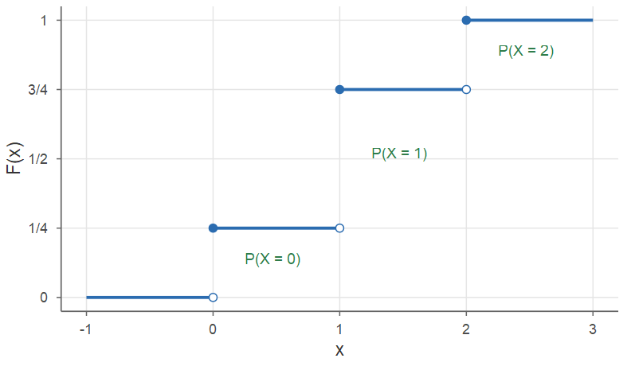
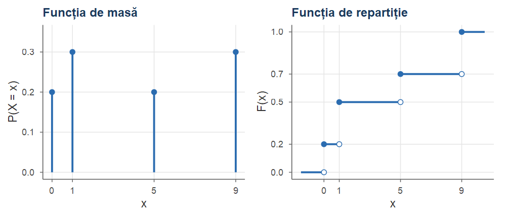
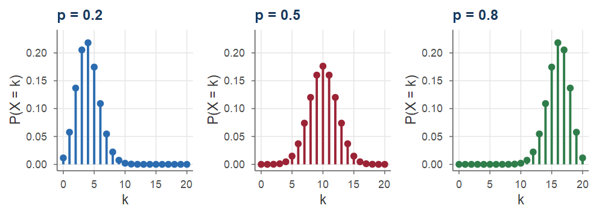
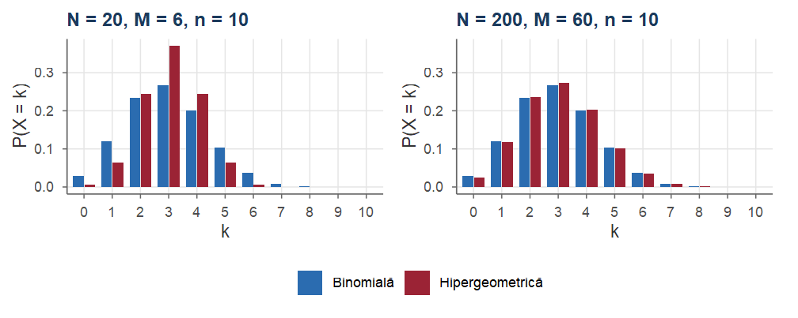
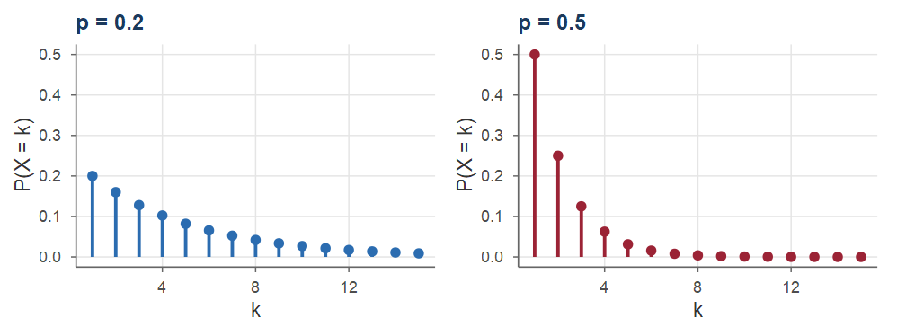
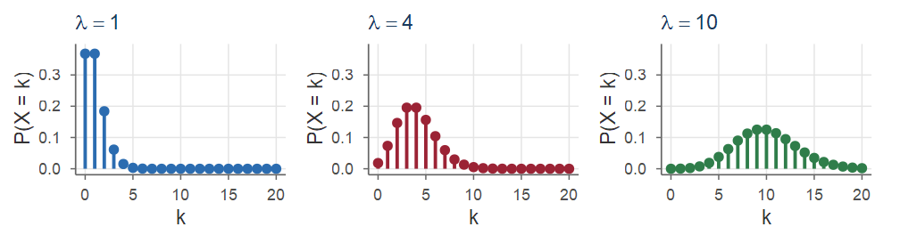
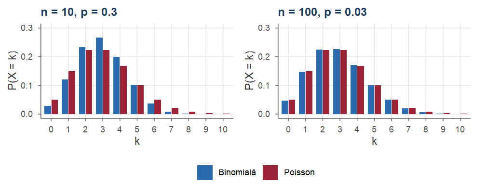
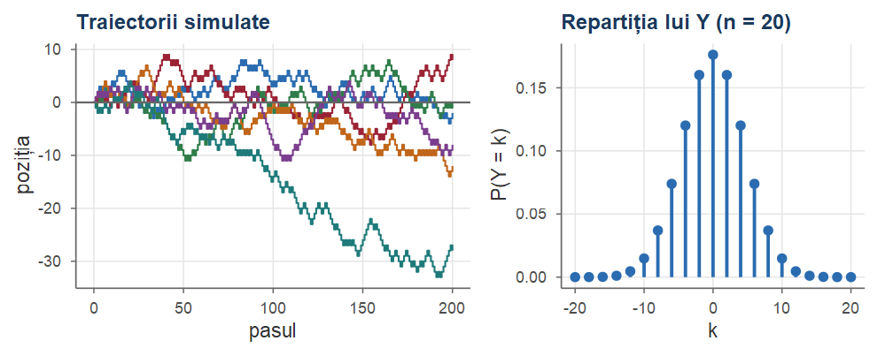
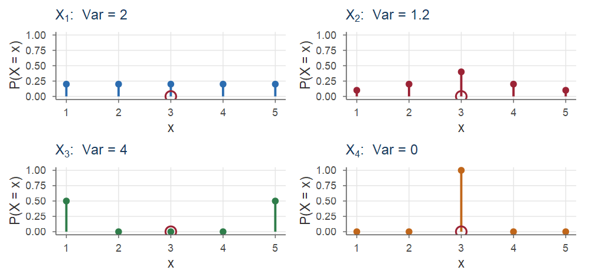

Cursul 3. Variabile aleatoare discrete
Probabilități și Statistică · Cursul 3
Alexandru Amărioarei
Universitatea din București · Facultatea de Matematică și Informatică · 2026–2027
Planul cursului
| Partea | Conținut |
|---|---|
| I | Variabile aleatoare, funcția de repartiție, funcția de masă |
| II | Repartiții discrete uzuale (Bernoulli … Poisson) |
| III | Funcții de v.a., independență, media |
| IV | Varianța; media și varianța repartițiilor uzuale; exerciții |
Obiective: lucrul cu \(F_X\) și \(p_X\); recunoașterea repartițiilor discrete uzuale; calculul lui \(\E[X]\) și \(\Var(X)\) (liniaritate, metoda indicatorilor).
Recapitulare
Din Cursurile 1 și 2
- Câmp de probabilitate \((\Omega,\F,\PP)\): \(\F\) este o \(\sigma\)-algebră, \(\PP(\Omega)=1\), \(\PP\) este \(\sigma\)-aditivă; monotonie, \(\PP(A^c)=1-\PP(A)\).
- Continuitatea probabilității (Teorema 18 din Cursul 1): \(A_n\uparrow A\) sau \(A_n\downarrow A\) \(\Rightarrow\) \(\PP(A_n)\to\PP(A)\).
- Definiția clasică: \(\PP(A)=|A|/|\Omega|\); combinări \(\binom nk\), binomul lui Newton.
- \(\PP(A\mid B)=\PP(A\cap B)/\PP(B)\); formula probabilității totale (Teorema 5 din Cursul 2): \(\PP(A)=\sum_i\PP(A\mid B_i)\PP(B_i)\) pentru o partiție \((B_i)_i\).
- Independența: \(\PP(A\cap B)=\PP(A)\PP(B)\); pentru o familie, relația produsului pentru toate subfamiliile finite.
- La repetări independente, probabilitatea unei secvențe de rezultate este produsul probabilităților.
Partea I — Variabile aleatoare. Funcția de repartiție
Motivație
Aruncăm două zaruri: \(\Omega=\{1,2,3,4,5,6\}^2\). Ne pot interesa întrebări precum:
- suma punctelor de pe cele două zaruri este egală cu \(3\)?
- câte fețe cu \(3\) puncte s-au obținut în cele două aruncări?
- care este numărul de puncte de pe al doilea zar, ridicat la puterea a treia?
Nu ne interesează rezultatul exact \(\omega=(\omega_1,\omega_2)\), ci un număr calculat din el: \[ \omega_1+\omega_2,\qquad \Ind_{\{\omega_1=3\}}+\Ind_{\{\omega_2=3\}},\qquad \omega_2^3 . \] La fel, la aruncarea repetată a unei monede ne interesează doar câte „capete” (H) s-au obținut.
Ideea: asociem fiecărui \(\omega\in\Omega\) o valoare numerică \(X(\omega)\in\R\), adică o funcție \(X:\Omega\to\R\). Pentru a calcula \(\PP(X\le x)\) avem nevoie ca \(\{\omega\mid X(\omega)\le x\}\in\F\).
Variabilă aleatoare
Definiția 1 (Variabilă aleatoare)
Fie \((\Omega,\F,\PP)\) un câmp de probabilitate. O funcție reală \(X:\Omega\to\R\) se numește variabilă aleatoare dacă \[ \{\omega\in\Omega\mid X(\omega)\le x\}\in\F,\qquad \forall x\in\R . \] Mulțimea \(\{\omega\in\Omega\mid X(\omega)\le x\}\) se notează prescurtat \(\{X\le x\}\).
Variabilele aleatoare se notează cu litere mari de la sfârșitul alfabetului (\(X,Y,Z,T,W,\ldots\)), iar valorile lor cu litere mici (\(x,y,z,\ldots\)).
Condiția de măsurabilitate
Observație
Condiția \(\{X\le x\}\in\F\), \(\forall x\), se numește condiție de măsurabilitate. Ea este echivalentă cu \[ X^{-1}(A)=\{\omega\in\Omega\mid X(\omega)\in A\}\in\F \quad\text{pentru orice mulțime boreliană } A\in\B(\R), \] unde \(\B(\R)\) este \(\sigma\)-algebra generată de intervalele \((-\infty,x]\) (conține toate intervalele, reuniunile numărabile de intervale, mulțimile cel mult numărabile etc.).
Pentru orice mulțime „rezonabilă” \(A\subseteq\R\), \(\{X\in A\}\) este un eveniment. Dacă \(\F=\mathcal{P}(\Omega)\) (de exemplu \(\Omega\) finit), orice funcție \(X:\Omega\to\R\) este variabilă aleatoare.
Exemplu: numărul de capete la două aruncări
Exemplul 1 (Numărul de capete la două aruncări ale unei monede)
\(\Omega=\{HH,HT,TH,TT\}\), \(\F=\mathcal{P}(\Omega)\); \(X\) = numărul de capete: \(X(HH)=2\), \(X(HT)=X(TH)=1\), \(X(TT)=0\). Codificând \(H\mapsto1\), \(T\mapsto0\): \(X((x,y))=x+y\). Pentru orice \(x\in\R\), \[ \{X\le x\}=\begin{cases} \emptyset, & x<0,\\ \{TT\}, & 0\le x<1,\\ \{TT,HT,TH\}, & 1\le x<2,\\ \Omega, & x\ge 2, \end{cases} \] toate fiind evenimente (de exemplu \(\{X\le\sqrt2\}=\{TT,TH,HT\}\)). Deci \(X\) este v.a., cu \(X(\Omega)=\{0,1,2\}\).
Variabila aleatoare ca funcție

\(X\) „transportă” fiecare rezultat elementar într-un număr real; rezultatele \(HT\) și \(TH\) au aceeași imagine, \(1\).
Variabile aleatoare discrete
Definiția 2 (Mulțimea valorilor. Variabile aleatoare discrete)
Fie \(X:\Omega\to\R\) o variabilă aleatoare. Mulțimea \(X(\Omega)=\{X(\omega)\mid\omega\in\Omega\}\) se numește mulțimea valorilor lui \(X\). Spunem că \(X\) este o variabilă aleatoare discretă dacă \(X(\Omega)\) este cel mult numărabilă (finită sau numărabilă). În caz contrar spunem că \(X\) este o variabilă aleatoare continuă.
Exemplul 2 (Aceeași alegere, două variabile)
Alegem la întâmplare \(a\in[-1,1]\). \(X=a^3\) ia toate valorile din \([-1,1]\) (continuă), pe când \(Y=\sgn(a)\in\{-1,0,1\}\) ia doar trei valori (discretă).
Repartiția unei variabile aleatoare
Vrem să calculăm probabilități \(\PP(X\in A)\), \(A\subseteq\R\). Evenimentul \(\{X\in A\}=X^{-1}(A)\) este preimaginea lui \(A\) prin \(X\), iar \(\PP(X\in A)=(\PP\circ X^{-1})(A)\).
Definiția 3 (Repartiția unei variabile aleatoare)
Fie \(X:\Omega\to\R\) o variabilă aleatoare pe \((\Omega,\F,\PP)\). Se numește repartiția (distribuția) lui \(X\) măsura de probabilitate \(\PP_X\) pe \(\R\), \[ \PP_X(A)=\PP(X\in A)=\PP\big(X^{-1}(A)\big),\qquad A\in\B(\R), \] adică \(\PP_X=\PP\circ X^{-1}\).
Repartiția este o probabilitate pe \(\R\)
Observație
\(\PP_X\) este o măsură de probabilitate pe \((\R,\B(\R))\): \(\PP_X(\R)=\PP(\Omega)=1\), iar dacă \(A_1,A_2,\ldots\) sunt disjuncte, preimaginile \(X^{-1}(A_n)\) sunt disjuncte și \(X^{-1}\big(\bigcup_n A_n\big)=\bigcup_n X^{-1}(A_n)\), deci \(\PP_X\big(\bigcup_n A_n\big)=\sum_n\PP_X(A_n)\). Repartiția „transportă” probabilitatea de pe \(\Omega\) pe dreapta reală.
Exemplul 3 (Repartiția numărului de capete)
Pentru \(X\) din Exemplul 1: \(X(\Omega)=\{0,1,2\}\) și \[ \PP(X=0)=\PP(\{TT\})=\tfrac14,\quad \PP(X=1)=\PP(\{HT,TH\})=\tfrac12,\quad \PP(X=2)=\tfrac14 . \] Pentru \(A=[0.5,\,1.7]\): \(\{X\in A\}=\{X=1\}\), deci \(\PP_X(A)=\tfrac12\).
Funcția de repartiție
Repartiția \(\PP_X\) este o funcție de mulțimi, greu de manipulat direct; ea este complet determinată de valorile pe semidreptele \((-\infty,x]\).
Definiția 4 (Funcția de repartiție)
Fie \(X:\Omega\to\R\) o variabilă aleatoare. Se numește funcția de repartiție a lui \(X\) (funcția cumulativă) funcția \(F_X:\R\to[0,1]\), \[ F_X(x)=\PP(X\le x),\qquad \forall x\in\R . \] Pentru \(A=(-\infty,x]\): \(F_X(x)=\PP_X\big((-\infty,x]\big)\).
Când nu există pericol de confuzie, scriem \(F\) în loc de \(F_X\).
Exemplu: funcția de repartiție a numărului de capete
Exemplul 4 (Funcția de repartiție a numărului de capete)
Continuăm Exemplul 1. Calculăm \(F(x)=\PP(X\le x)\) pe intervale:
- \(x<0\): \(\{X\le x\}=\emptyset\), deci \(F(x)=0\);
- \(0\le x<1\): \(\{X\le x\}=\{X=0\}\), deci \(F(x)=\frac14\);
- \(1\le x<2\): \(\{X\le x\}=\{X=0\}\cup\{X=1\}\) (disjunctă), deci \(F(x)=\frac14+\frac12=\frac34\);
- \(x\ge 2\): \(\{X\le x\}=\Omega\), deci \(F(x)=1\).
Graficul funcției de repartiție
\[ F(x)=\begin{cases}0, & x<0,\\ 1/4, & 0\le x<1,\\ 3/4, & 1\le x<2,\\ 1, & x\ge 2 .\end{cases} \]
Funcție în scară, cu salturi în \(0,1,2\); mărimea fiecărui salt este probabilitatea valorii respective.
Proprietățile funcției de repartiție
Teorema 5 (Proprietățile funcției de repartiție)
Fie \(F\) funcția de repartiție a unei variabile aleatoare \(X\). Atunci:
- \(F\) este crescătoare: \(x<y\Rightarrow F(x)\le F(y)\);
- \(F\) este continuă la dreapta: \(\lim_{x\to x_0,\,x>x_0}F(x)=F(x_0)\), pentru orice \(x_0\in\R\);
- \(\lim_{x\to-\infty}F(x)=0\) și \(\lim_{x\to+\infty}F(x)=1\).
Observație
Reciproc (admis fără demonstrație): orice \(F:\R\to[0,1]\) cu a), b), c) este funcția de repartiție a unei v.a.; \(F\) determină în mod unic repartiția \(\PP_X\).
Proprietățile funcției de repartiție — demonstrație
Demonstrație.
Dacă \(x<y\), atunci \(\{X\le x\}\subseteq\{X\le y\}\), deci, din monotonia probabilității, \(F(x)\le F(y)\).
\(F\) fiind monotonă, este suficient să arătăm \(F(x_n)\to F(x_0)\) pentru un șir \(x_n\downarrow x_0\). Evenimentele \(A_n=\{X\le x_n\}\) formează un șir descrescător cu \(\bigcap_n A_n=\{X\le x_0\}\), deci, din continuitatea probabilității, \[ F(x_n)=\PP(A_n)\to\PP(X\le x_0)=F(x_0). \]
Dacă \(x_n\downarrow-\infty\), atunci \(\{X\le x_n\}\downarrow\emptyset\), deci \(F(x_n)\to\PP(\emptyset)=0\). Dacă \(x_n\uparrow+\infty\), atunci \(\{X\le x_n\}\uparrow\Omega\) și \(F(x_n)\to\PP(\Omega)=1\).
■
Calculul probabilităților cu funcția de repartiție
Notăm \(F(x-)=\lim_{y\to x,\,y<x}F(y)\) limita la stânga (există, \(F\) fiind monotonă).
Propoziția 6 (Calculul probabilităților cu funcția de repartiție)
Fie \(X\) o variabilă aleatoare cu funcția de repartiție \(F\). Pentru orice \(x<y\):
- \(\PP(X>x)=1-\PP(X\le x)=1-F(x)\);
- \(\PP(X<x)=F(x-)\);
- \(\PP(x<X\le y)=\PP(X\le y)-\PP(X\le x)=F(y)-F(x)\);
- \(\PP(X=x)=\PP(X\le x)-\PP(X<x)=F(x)-F(x-)\).
Calculul probabilităților — demonstrație
Demonstrație.
rezultă din \(\{X>x\}=\{X\le x\}^c\).
Evenimentele \(\{X\le x-\frac1n\}\) cresc către \(\{X<x\}\), deci \(F(x-\frac1n)\to\PP(X<x)\); din monotonia lui \(F\), limita coincide cu \(F(x-)\).
\(\{X\le y\}=\{X\le x\}\cup\{x<X\le y\}\), reuniune disjunctă.
\(\{X\le x\}=\{X<x\}\cup\{X=x\}\), reuniune disjunctă.
■
Pentru Exemplul 4: \(\PP(X=2)=F(2)-F(2-)=1-\frac34=\frac14\) și \(\PP(X<1)=F(1-)=\frac14\), pe când \(\PP(X\le1)=F(1)=\frac34\).
Mărimea saltului
Observație
Relația g) arată că \(\PP(X=x)\) este exact mărimea saltului lui \(F\) în \(x\). În particular, \(F\) este continuă în \(x\) dacă și numai dacă \(\PP(X=x)=0\). Combinând e) și g): \[ \begin{aligned} \PP(x\le X\le y)&=F(y)-F(x-), & \PP(x<X<y)&=F(y-)-F(x),\\ \PP(x\le X<y)&=F(y-)-F(x-). && \end{aligned} \] Pentru variabilele discrete aceste probabilități pot fi diferite: atenție la inegalitățile stricte!
Variabile aleatoare discrete
Fie \(X\) discretă, cu \(X(\Omega)=\{x_1,x_2,\ldots\}\). Evenimentele \(\{X=x_i\}\), \(i\ge1\), sunt disjuncte două câte două și au reuniunea \(\Omega\) — formează o partiție a lui \(\Omega\). Pentru orice \(A\subseteq\R\), \[ \{X\in A\}=\bigcup_{x\in A\cap X(\Omega)}\{X=x\}\quad\text{(reuniune disjunctă)}, \] deci, din \(\sigma\)-aditivitatea lui \(\PP\), \[ \PP(X\in A)=\sum_{x\in A\cap X(\Omega)}\PP(X=x). \] Așadar repartiția unei v.a. discrete este complet determinată de probabilitățile \(\PP(X=x)\), \(x\in X(\Omega)\).
Funcția de masă
Definiția 7 (Funcția de masă)
Fie \(X:\Omega\to\R\) o variabilă aleatoare discretă. Se numește funcția de masă a lui \(X\) (engl. probability mass function, PMF) funcția \(p_X:\R\to[0,1]\), \[ p_X(x)=\PP(X=x),\qquad x\in\R . \] Evident \(p_X(x)=0\) pentru \(x\notin X(\Omega)\), iar \(\PP(X\in A)=\sum_{x\in A\cap X(\Omega)}p_X(x)\).
Observație
În literatură se folosește și \(f(x)\) sau \(p(x)\); aici \(f\) este rezervat densităților. Pentru \(A=(-\infty,x]\): \[ F_X(x)=\PP(X\le x)=\sum_{y\in X(\Omega),\ y\le x}p_X(y). \]
Proprietățile funcției de masă
Propoziția 8 (Proprietățile funcției de masă)
Funcția de masă a unei v.a. discrete \(X\) verifică:
- \(p_X(x)\ge 0\) pentru orice \(x\in\R\);
- \(\displaystyle\sum_{x\in X(\Omega)}p_X(x)=1\).
Reciproc, dacă \(D=\{x_1,x_2,\ldots\}\subset\R\) este cel mult numărabilă și \(p_i\ge0\) cu \(\sum_i p_i=1\), atunci există o v.a. discretă \(X\) cu \(X(\Omega)=D\) (eliminând eventual punctele cu \(p_i=0\)) și \(\PP(X=x_i)=p_i\).
Demonstrație.
- este evidentă. b) \(\sum_{x\in X(\Omega)}p_X(x)=\PP(X\in\R)=\PP(\Omega)=1\). Pentru reciprocă luăm \(\Omega=D\), \(\F=\mathcal{P}(D)\), \(\PP(\{x_i\})=p_i\) și \(X(\omega)=\omega\).
■
Tabelul de repartiție
Notație. Dacă \(X\) este discretă cu \(X(\Omega)=\{x_1,x_2,\ldots\}\), scriem \[ X\sim\begin{pmatrix} x_1 & x_2 & x_3 & \cdots\\ \PP(X=x_1) & \PP(X=x_2) & \PP(X=x_3) & \cdots\end{pmatrix} \quad\text{sau}\quad X\sim\begin{pmatrix} x_1 & x_2 & x_3 & \cdots\\ p_1 & p_2 & p_3 & \cdots\end{pmatrix}. \] Pe primul rând: valorile variabilei; pe al doilea: masa de probabilitate din fiecare punct. Simbolul „\(\sim\)” se citește „este repartizată ca”.
Exemplu: numărul de capete la două aruncări, \[ X\sim\begin{pmatrix}0&1&2\\ \frac14&\frac12&\frac14\end{pmatrix}. \]
Variabile cu un număr finit de valori
Fie \(X(\Omega)=\{x_1<x_2<\cdots<x_n\}\), \(p_i=\PP(X=x_i)\). Atunci \[ F(x)=\begin{cases} 0, & x<x_1,\\ p_1+\cdots+p_k, & x_k\le x<x_{k+1},\ k=1,\ldots,n-1,\\ 1, & x\ge x_n . \end{cases} \]
- \(F\) este în scară: constantă pe \([x_k,x_{k+1})\), cu un salt de mărime \(p_k\) în \(x_k\).
- Valorile \(0<p_1<p_1+p_2<\cdots<p_1+\cdots+p_{n-1}<1\) împart \([0,1]\) în \(n\) subintervale de lungimi \(p_1,\ldots,p_n\).
- Această observație stă la baza simulării unei variabile discrete.
De la graficul lui \(F\) la tabelul de repartiție
Exemplul 5 (De la graficul funcției de repartiție la tabelul de repartiție)
\(F\) are salturi în \(0,1,5,9\), cu \(F(0)=0.2\), \(F(1)=0.5\), \(F(5)=0.7\), \(F(9)=1\). Din Propoziția 6 g): \[ \begin{aligned} \PP(X=0)&=F(0)-F(0-)=0.2, & \PP(X=1)&=0.5-0.2=0.3,\\ \PP(X=5)&=0.7-0.5=0.2, & \PP(X=9)&=1-0.7=0.3, \end{aligned} \] deci \(X\sim\begin{pmatrix}0 & 1 & 5 & 9\\ 0.2 & 0.3 & 0.2 & 0.3\end{pmatrix}\). De exemplu, \(\PP(1<X\le 9)=F(9)-F(1)=0.5\), iar \(\PP(1\le X<9)=F(9-)-F(1-)=0.7-0.2=0.5\).
Funcția de masă și funcția de repartiție

Salturile funcției de repartiție au exact înălțimile barelor funcției de masă.
Simularea unei variabile discrete
# Simularea unei v.a. discrete: împărțim [0,1] în intervale de lungimi p_i
x <- c(0, 1, 5, 9); p <- c(0.2, 0.3, 0.2, 0.3)
set.seed(3)
u <- runif(1e5) # numere uniforme pe [0,1]
# x_k dacă u cade în al k-lea interval; echivalent: sample(x, 1e5, TRUE, p)
esant <- x[findInterval(u, cumsum(p)) + 1]
round(table(esant) / length(esant), 3) # frecvențe relative, apropiate de p#> esant
#> 0 1 5 9
#> 0.201 0.299 0.202 0.298Variabila aleatoare constantă
Cel mai simplu exemplu: \(X(\omega)=c\) pentru orice \(\omega\in\Omega\). Atunci \(X(\Omega)=\{c\}\), \[ p_X(x)=\begin{cases}1, & x=c,\\ 0, & x\ne c,\end{cases} \qquad F_X(x)=\begin{cases}0, & x<c,\\ 1, & x\ge c .\end{cases} \] Scriem \(X\sim\begin{pmatrix}c\\ 1\end{pmatrix}\).
Mai general, \(X\) este degenerată dacă \(\PP(X=c)=1\) pentru un anumit \(c\in\R\).
Partea II — Repartiții discrete uzuale
Modele de variabile aleatoare discrete
Fiecare repartiție este introdusă pornind de la un context (un experiment aleator tipic):
- din context deducem funcția de masă;
- verificăm că este o funcție de masă validă (Propoziția 8);
- dăm funcțiile R corespunzătoare.
În R, pentru fiecare repartiție există patru funcții, cu prefixele
d— funcția de masă,p— funcția de repartiție,q— cuantile,r— generare de valori aleatoare,
de exemplu dbinom, pbinom, qbinom, rbinom.
Repartiția Bernoulli
Succes/eșec: \(X(\omega)=1\) dacă \(\omega\in A\), \(X(\omega)=0\) altfel; \(\PP(X=1)=\PP(A)=p\).
Definiția 9 (Repartiția Bernoulli)
\(X\) este repartizată Bernoulli de parametru \(p\in[0,1]\), \(X\sim\Bern(p)\), dacă \(X(\Omega)\subseteq\{0,1\}\) și \(\PP(X=1)=p\): \[ p_X(x)=p^x(1-p)^{1-x},\ x\in\{0,1\}, \qquad X\sim\begin{pmatrix}0 & 1\\ 1-p & p\end{pmatrix}, \] iar \(F(x)=0\) pentru \(x<0\), \(F(x)=1-p\) pentru \(0\le x<1\), \(F(x)=1\) pentru \(x\ge 1\).
Observație
Funcția indicatoare \(\Ind_A\) (\(=1\) pe \(A\), \(0\) în rest) verifică \(\Ind_A\sim\Bern(\PP(A))\); reciproc, \(X\sim\Bern(p)\) este indicatoarea lui \(\{X=1\}\). Dacă \(X\sim\Bern(p)\), atunci \(1-X\sim\Bern(1-p)\).
Repartiția binomială: contextul
Efectuăm \(n\) experimente independente și identice; la fiecare ne interesează realizarea lui \(A\), \(\PP(A)=p\). Fie \(X\) = numărul de realizări ale lui \(A\); \(X(\Omega)=\{0,1,\ldots,n\}\).
Exemplul tipic: aruncăm de \(n\) ori o monedă cu \(\PP(H)=p\), \(X\) = numărul de capete.
- Pentru \(n=5\), \(k=3\), secvența \(THHTH\) are probabilitatea (independență) \[ (1-p)\cdot p\cdot p\cdot(1-p)\cdot p=p^3(1-p)^2 . \]
- O secvență fixată cu \(k\) de \(H\) și \(n-k\) de \(T\) are probabilitatea \(p^k(1-p)^{n-k}\), indiferent de ordine.
- Există \(\binom nk\) astfel de secvențe (alegem pozițiile lui \(H\)); pentru \(n=5,k=3\): \(\binom53=10\).
Deci \(\PP(X=k)=\binom{n}{k}p^k(1-p)^{n-k}\), \(k\in\{0,1,\ldots,n\}\).
Repartiția binomială
Definiția 10 (Repartiția binomială)
\(X\) este repartizată binomial de parametri \(n\in\N^*\) și \(p\in[0,1]\), \(X\sim\Bin(n,p)\), dacă \(X(\Omega)=\{0,1,\ldots,n\}\) și \[ \PP(X=k)=\binom{n}{k}p^k(1-p)^{n-k},\qquad k=0,1,\ldots,n . \]
Funcție de masă validă: termenii sunt \(\ge0\) și, din binomul lui Newton, \(\sum_{k=0}^n\binom{n}{k}p^k(1-p)^{n-k}=\big(p+(1-p)\big)^n=1\).
Observație
\(\Bin(1,p)=\Bern(p)\). Mai mult, \(X=Y_1+\cdots+Y_n\), unde \(Y_j=1\) dacă \(A\) s-a realizat la experimentul \(j\): o sumă de \(n\) variabile Bernoulli independente. Urne: \(n\) extrageri cu întoarcere dintr-o urnă cu \(M\) bile negre din \(N\) \(\Rightarrow\) numărul de bile negre este \(\Bin(n,M/N)\).
Exemplu: transmiterea unui bit
Exemplul 6 (Transmiterea unui bit printr-un canal cu zgomot)
Un bit este transmis incorect cu probabilitatea \(p=0.1\); pentru fiabilitate este transmis de \(n=5\) ori (independent), iar receptorul decide prin vot majoritar. Numărul de transmisii eronate este \(X\sim\Bin(5,0.1)\); decodare corectă dacă \(X\le2\): \(\PP(X\le 2)=F(2)=\sum_{k=0}^{2}\binom5k 0.1^k\,0.9^{5-k}=0.59049+0.32805+0.0729=0.99144\), față de \(0.9\) la o singură transmisie.
Forma repartiției binomiale

Funcția de masă a lui \(\Bin(20,p)\): pentru \(p=0.5\) este simetrică față de \(n/2\); pentru \(p<0.5\) (respectiv \(p>0.5\)) masa se concentrează spre valorile mici (mari). Graficele pentru \(p\) și \(1-p\) sunt simetrice, deoarece \(n-X\sim\Bin(n,1-p)\).
Repartiția hipergeometrică
Urnă cu \(N\) bile: \(M\) negre și \(N-M\) albe. Extragem \(n\) bile fără întoarcere (echivalent, simultan); \(X\) = numărul de bile negre extrase. Cele \(\binom Nn\) submulțimi de \(n\) bile sunt egal probabile, iar \(\binom Mk\binom{N-M}{n-k}\) dintre ele conțin exact \(k\) bile negre.
Definiția 11 (Repartiția hipergeometrică)
\(X\sim\HGeom(N,M,n)\) (total \(N\), negre \(M\le N\), extrase fără întoarcere \(n\le N\)) dacă \[ \PP(X=k)=\frac{\binom{M}{k}\binom{N-M}{n-k}}{\binom{N}{n}},\qquad k=0,1,\ldots,\min(n,M), \] cu convenția \(\binom{a}{b}=0\) pentru \(b>a\).
Valorile efectiv posibile: \(\max(0,\,n-(N-M))\le k\le\min(n,M)\).
Identitatea lui Vandermonde
Pentru ca suma probabilităților să fie \(1\) trebuie arătat că \[ \sum_{k=0}^{n}\binom{M}{k}\binom{N-M}{n-k}=\binom{N}{n}. \]
Ideea demonstrației. Pornim de la identitatea polinomială \((1+x)^M(1+x)^{N-M}=(1+x)^N\) și identificăm coeficientul lui \(x^n\) în ambii membri:
- în dreapta, coeficientul este \(\binom{N}{n}\);
- în stânga, se obține înmulțind coeficientul lui \(x^k\) din \((1+x)^M\), adică \(\binom Mk\), cu coeficientul lui \(x^{n-k}\) din \((1+x)^{N-M}\), adică \(\binom{N-M}{n-k}\), și sumând după \(k\).
Interpretare combinatorie: alegem \(n\) bile din \(N\), clasificând după numărul \(k\) de bile negre.
Exemplu: Loto 6/49
Exemplul 7 (Loto 6/49)
La Loto 6/49 se extrag, fără întoarcere, \(6\) bile dintr-o urnă cu \(49\) de bile numerotate. Un jucător a ales \(6\) numere; fie \(X\) numărul de numere câștigătoare dintre cele alese. Privind numerele jucătorului ca „bile negre”, \(X\sim\HGeom(49,6,6)\): \[ \PP(X=k)=\frac{\binom6k\binom{43}{6-k}}{\binom{49}{6}},\qquad k=0,1,\ldots,6 . \] Jucătorul câștigă un premiu dacă ghicește cel puțin \(3\) numere: \[ \PP(X\ge3)=1-\PP(X=0)-\PP(X=1)-\PP(X=2)\approx 0.01864 , \] iar probabilitatea de a ghici toate cele \(6\) numere este \(1/\binom{49}{6}=1/13\,983\,816\approx 7.15\cdot10^{-8}\).
Hipergeometrica în R: Loto 6/49
#> [1] 0.435965 0.413019 0.132378 0.017650 0.000969 0.000018 0.000000#> [1] 0.01864
Atenție!
Parametrii funcțiilor R dhyper, phyper, rhyper sunt numărul de bile negre, numărul de bile albe (nu numărul total!) și numărul de extrageri. Pentru \(X\sim\HGeom(N,M,n)\) se scrie dhyper(k, M, N - M, n).
Controlul calității și metoda captură-recaptură
Exemplul 8 (Controlul calității și metoda captură-recaptură)
Controlul calității. Un lot are \(N=100\) de piese, dintre care \(M=5\) defecte; se extrag fără întoarcere \(n=10\) piese și lotul este acceptat dacă nu apare nicio piesă defectă. Cu \(X\sim\HGeom(100,5,10)\): \[ \PP(\text{lot acceptat})=\PP(X=0)=\frac{\binom50\binom{95}{10}}{\binom{100}{10}}\approx 0.5838 \qquad(\text{cu întoarcere: } 0.95^{10}\approx0.5987). \] Captură-recaptură. Pentru a estima numărul necunoscut \(N\) de pești dintr-un lac se capturează, se marchează și se eliberează \(M\) pești; apoi se capturează \(n\) pești, dintre care \(X\sim\HGeom(N,M,n)\) sunt marcați. Cum \(X/n\approx M/N\), estimăm \[ \hat N=\frac{Mn}{X};\qquad M=100,\ n=80,\ X=16\ \Rightarrow\ \hat N=500 . \]
Hipergeometrică vs. binomială

Dacă \(N\) este mare față de \(n\), extragerea unei bile modifică foarte puțin compoziția urnei: dacă \(N\to\infty\) și \(M/N\to p\), atunci \(\HGeom(N,M,n)\) se apropie de \(\Bin(n,p)\).
Repartiția uniformă discretă
Definiția 12 (Repartiția uniformă discretă)
Fie \(D=\{x_1,x_2,\ldots,x_n\}\subset\R\) o mulțime finită. \(X:\Omega\to D\) este repartizată uniform pe \(D\), \(X\sim\Unif(D)\), dacă \[ \PP(X=x)=\frac{1}{|D|}=\frac1n,\qquad x\in D . \]
Dacă \(A\subseteq D\), atunci \[ \PP(X\in A)=\sum_{x\in A}\PP(X=x)=\sum_{x\in A}\frac{1}{|D|}=\frac{|A|}{|D|}, \] adică regăsim definiția clasică a probabilității („cazuri favorabile / cazuri posibile”).
- Rezultatul aruncării unui zar echilibrat: \(\Unif(\{1,\ldots,6\})\).
- În R:
sample(D, size, replace = TRUE).
Exemplu: urnă cu bile numerotate de la 1 la 100
Exemplul 9 (Extrageri dintr-o urnă cu bile numerotate de la 1 la 100)
O urnă conține bile numerotate de la \(1\) la \(100\). Extragem \(5\) bile, una după alta.
- Care este repartiția v.a. care ne dă numărul bilelor cu valoare \(\ge 70\)?
- Cum este repartizată valoarea obținută la a \(i\)-a extragere?
- Care este probabilitatea ca bila cu numărul \(100\) să fie extrasă cel puțin o dată?
Considerăm două situații: I. extrageri cu întoarcere; II. extrageri fără întoarcere.
Urna cu 100 de bile — extrageri cu întoarcere
Cazul I: extrageri cu întoarcere
Există \(31\) de bile cu valori \(\ge70\) (\(70,71,\ldots,100\)), deci numărul \(X\) de astfel de bile extrase este \(X\sim\Bin\big(5,\frac{31}{100}\big)\).
Fie \(X_i\) valoarea de la a \(i\)-a extragere. Urna are aceeași compoziție la fiecare extragere, deci \(\PP(X_i=k)=\frac{1}{100}\), \(k\in\{1,\ldots,100\}\): \(X_i\sim\Unif(\{1,\ldots,100\})\).
Fie \(A_i=\{X_i=100\}\). Trecând la complementară și folosind independența extragerilor, \[ \PP\Big(\bigcup_{i=1}^5 A_i\Big)=1-\PP\Big(\bigcap_{i=1}^5 A_i^c\Big)=1-\prod_{i=1}^5\PP(X_i\ne100)=1-\left(\frac{99}{100}\right)^5\approx 0.04901 . \]
Urna cu 100 de bile — extrageri fără întoarcere
Cazul II: extrageri fără întoarcere, a) și b)
Numărul \(Y\) de bile cu valoare \(\ge 70\) este \(Y\sim\HGeom(100,31,5)\).
Fie \(Y_i\) valoarea de la a \(i\)-a extragere; \(Y_1\sim\Unif(\{1,\ldots,100\})\). Pentru \(Y_2\) aplicăm formula probabilității totale cu \(A_i=\{Y_1=i\}\), \(\PP(A_i)=\frac1{100}\): \(\PP(Y_2=j\mid Y_1=i)=0\) dacă \(i=j\) și \(\frac1{99}\) dacă \(i\ne j\), deci, pentru orice \(j\in\{1,\ldots,100\}\), \[ \PP(Y_2=j)=\sum_{i=1}^{100}\PP(Y_2=j\mid Y_1=i)\,\PP(Y_1=i)=99\cdot\frac1{99}\cdot\frac1{100}=\frac{1}{100}. \] Deci \(Y_2\sim\Unif(\{1,\ldots,100\})\); analog \(Y_i\sim\Unif(\{1,\ldots,100\})\) pentru orice \(i\): fiecare extragere, privită separat, este uniformă, deși extragerile nu mai sunt independente.
Urna cu 100 de bile — punctul c) fără întoarcere
Cazul II: extrageri fără întoarcere, c)
Acum evenimentele \(\{Y_i=100\}\), \(i=1,\ldots,5\), sunt disjuncte două câte două (bila \(100\) poate fi extrasă cel mult o dată), deci \[ \PP\Big(\bigcup_{i=1}^5\{Y_i=100\}\Big)=\sum_{i=1}^5\PP(Y_i=100)=\frac{5}{100}=0.05 . \]
Comparație: cu întoarcere \(1-0.99^5\approx0.04901\), fără întoarcere \(0.05\).
Repartiția geometrică
Aruncăm repetat o monedă cu \(p=\PP(\{H\})\in(0,1)\); \(X\) = numărul de aruncări până la primul succes, inclusiv; \(X\in\N^*\). \(\{X=k\}=\{\underbrace{TT\cdots T}_{k-1}H\}\), deci, din independență, \(\PP(X=k)=(1-p)^{k-1}p\).
Definiția 13 (Repartiția geometrică)
\(X\) este repartizată geometric de parametru \(p\in(0,1]\), \(X\sim\Geom(p)\), dacă \(X(\Omega)=\N^*\) și \[ \PP(X=k)=(1-p)^{k-1}p,\qquad k=1,2,\ldots \]
Validitate, cu \(q=1-p\) și seria geometrică (\(|q|<1\)): \(\sum_{k=1}^\infty(1-p)^{k-1}p=p\sum_{i=0}^\infty q^i=p\cdot\frac{1}{1-q}=1\). Coada: \(\{X>n\}\) = primele \(n\) încercări sunt eșecuri, deci \[ \PP(X>n)=(1-p)^n,\qquad F(n)=\PP(X\le n)=1-(1-p)^n,\qquad n\in\N . \]
Două convenții pentru repartiția geometrică
Atenție!
În unele cărți (și în R) se numără eșecurile dinaintea primului succes: \(Y=X-1\in\N\), \(\PP(Y=k)=(1-p)^k p\), \(k\ge0\). Pentru \(X\sim\Geom(p)\) din curs, \(\PP(X=k)=\) dgeom(k - 1, p).
Forma repartiției geometrice

Funcția de masă este descrescătoare (o progresie geometrică de rație \(1-p\)). Dacă după \(n\) încercări nu s-a obținut niciun succes, numărul de încercări suplimentare are aceeași repartiție ca la început: moneda „nu își amintește” eșecurile anterioare.
Proprietatea lipsei de memorie
Propoziția 14 (Proprietatea lipsei de memorie)
Dacă \(X\sim\Geom(p)\), atunci pentru orice \(n\in\N\) și \(k\in\N^*\), \[ \PP(X=n+k\mid X>n)=\PP(X=k)\qquad\text{și}\qquad \PP(X>n+k\mid X>n)=\PP(X>k). \]
Demonstrație. Deoarece \(\{X=n+k\}\subseteq\{X>n\}\) și \(\PP(X>n)=(1-p)^n\), \[ \PP(X=n+k\mid X>n)=\frac{\PP(X=n+k,\,X>n)}{\PP(X>n)}=\frac{(1-p)^{n+k-1}p}{(1-p)^n}=(1-p)^{k-1}p=\PP(X=k). \] Analog, \(\PP(X>n+k\mid X>n)=\frac{(1-p)^{n+k}}{(1-p)^n}=(1-p)^k=\PP(X>k)\).■
Lipsa de memorie caracterizează repartiția geometrică
Observație
Reciproc, repartiția geometrică este singura repartiție pe \(\N^*\) cu proprietatea lipsei de memorie. Într-adevăr, dacă \(G(k)=\PP(X>k)\) verifică \[ G(n+k)=G(n)\,G(k)\qquad\text{pentru orice } n,k\in\N, \] atunci prin inducție \(G(k)=G(1)^k\), adică \(\PP(X>k)=(1-p)^k\) cu \(1-p=G(1)\), deci \(X\sim\Geom(p)\).
Atenție!
Eroarea jucătorului: ideea că, după o serie lungă de eșecuri, un succes devine „mai probabil” este falsă pentru încercări independente. După \(10\) aruncări fără \(6\), probabilitatea ca \(6\) să apară la aruncarea următoare este tot \(1/6\).
Repartiția negativ binomială
Repetăm independent un experiment până la \(r\ge1\) succese; \(X\) = numărul total de încercări, \(X\in\{r,r+1,\ldots\}\). \(\{X=k\}\): a \(k\)-a încercare este succes și printre primele \(k-1\) sunt exact \(r-1\) succese — \(\binom{k-1}{r-1}\) secvențe, fiecare de probabilitate \((1-p)^{k-r}p^r\).
Definiția 15 (Repartiția negativ binomială)
\(X\) este repartizată negativ binomial de parametri \(r\in\N^*\) și \(p\in(0,1]\), \(X\sim\NBin(r,p)\), dacă \[ \PP(X=k)=\binom{k-1}{r-1}(1-p)^{k-r}p^r,\qquad k=r,r+1,\ldots \]
Observație
\(\NBin(1,p)=\Geom(p)\) și \(X=X_1+\cdots+X_r\), cu \(X_i\sim\Geom(p)\) independente (\(X_i\) = numărul de încercări de după al \((i-1)\)-lea succes până la al \(i\)-lea). În R: \(\PP(X=k)=\) dnbinom(k - r, r, p).
Exemplu: aruncări libere
Exemplul 10 (Aruncări libere)
Un baschetbalist înscrie o aruncare liberă cu probabilitatea \(0.7\), independent de la o aruncare la alta. Probabilitatea ca al treilea coș să fie înscris exact la a cincea aruncare este, cu \(X\sim\NBin(3,0.7)\), \[ \PP(X=5)=\binom{4}{2}(0.3)^2(0.7)^3=6\cdot0.09\cdot0.343=0.18522 . \]
Repartiția Poisson
Definiția 16 (Repartiția Poisson)
\(X\) este repartizată Poisson de parametru \(\lambda>0\), \(X\sim\Pois(\lambda)\), dacă \(X(\Omega)=\N=\{0,1,2,\ldots\}\) și \[ \PP(X=k)=e^{-\lambda}\frac{\lambda^k}{k!},\qquad k\in\N . \]
Validitate: termenii sunt \(>0\) și, din seria Taylor a exponențialei, \(\sum_{k=0}^\infty e^{-\lambda}\frac{\lambda^k}{k!}=e^{-\lambda}e^{\lambda}=1\).

Când folosim repartiția Poisson?
Repartiția Poisson modelează numărul de apariții ale unui eveniment rar: repetăm un experiment de un număr mare de ori, iar șansa de apariție a evenimentului la fiecare repetare este mică. Exemple tipice:
- numărul de sosiri ale clienților la un ghișeu într-un interval de timp fixat;
- numărul de mesaje spam primite într-un minut;
- numărul de greșeli de tipar dintr-o pagină a unei cărți;
- numărul de cazuri ale unei boli rare dintr-o regiune geografică;
- numărul de dezintegrări radioactive înregistrate într-o secundă.
Notă istorică
S. D. Poisson a obținut repartiția în 1837 ca limită a binomialei. L. von Bortkiewicz (1898): numărul anual de soldați uciși de lovituri de cal în cavaleria prusacă urmează o repartiție Poisson („legea numerelor mici”).
Aproximarea Poisson a repartiției binomiale
Teorema 17 (Aproximarea Poisson a repartiției binomiale)
Fie \(\lambda>0\) și \(X_n\sim\Bin(n,p_n)\), unde \(np_n\to\lambda\) când \(n\to\infty\) (\(n\) mare, \(p_n\) mic). Atunci, pentru orice \(k\in\N\) fixat, \[ \lim_{n\to\infty}\PP(X_n=k)=e^{-\lambda}\frac{\lambda^k}{k!} . \]
În practică: dacă \(X\sim\Bin(n,p)\) cu \(n\) mare și \(p\) mic, atunci \[ \PP(X=k)\approx e^{-\lambda}\frac{\lambda^k}{k!},\qquad \lambda=np . \] Aproximarea este cu atât mai bună cu cât \(n\) este mai mare și \(p\) mai mic.
Aproximarea Poisson — demonstrație
Demonstrație. Considerăm \(p_n=\lambda/n\) (cazul general este analog). Atunci \[ \PP(X_n=k)=\binom{n}{k}\left(\frac{\lambda}{n}\right)^k\left(1-\frac\lambda n\right)^{n-k} =\frac{\lambda^k}{k!}\cdot\frac{n!}{(n-k)!\,n^k}\cdot\left(1-\frac\lambda n\right)^{n}\cdot\left(1-\frac\lambda n\right)^{-k}. \] Analizăm pe rând cei trei factori care depind de \(n\). Pentru \(k\) fixat, \[ \frac{n!}{(n-k)!\,n^k}=\frac{(n-k+1)\cdots(n-1)n}{n^k}=\frac{n-k+1}{n}\cdot\frac{n-k+2}{n}\cdots\frac{n}{n}\xrightarrow[n\to\infty]{}1, \] fiind un produs de \(k\) factori care tind la \(1\).
(continuare pe slide-ul următor)■
Aproximarea Poisson — demonstrație (continuare)
Demonstrație. Deoarece \(\lambda/n\to0\), avem o nedeterminare de tipul \(1^\infty\): \[ \lim_{n\to\infty}\left(1-\frac\lambda n\right)^n=\lim_{n\to\infty}\left[\left(1-\frac\lambda n\right)^{-\frac n\lambda}\right]^{-\lambda}=e^{-\lambda}, \qquad \lim_{n\to\infty}\left(1-\frac\lambda n\right)^{-k}=1 . \] Înmulțind limitele celor trei factori obținem \[ \PP(X_n=k)\xrightarrow[n\to\infty]{}\frac{\lambda^k}{k!}\cdot1\cdot e^{-\lambda}\cdot1=e^{-\lambda}\frac{\lambda^k}{k!}. \]■
Exemplu: clienții unui produs nou
Exemplul 11 (Clienții unui produs nou)
Un produs nou este prezentat la \(n=10^6\) potențiali clienți, fiecare cumpărându-l, independent, cu probabilitatea \(p=10^{-5}\). Care este probabilitatea să aibă cel puțin \(5\) cumpărători? Numărul de cumpărători este \(X\sim\Bin(10^6,10^{-5})\); aproximarea Poisson cu \(\lambda=np=10\) dă \[ \PP(X\ge5)=1-\sum_{k=0}^4\PP(X=k)\approx1-e^{-10}\left(1+10+\frac{10^2}{2!}+\frac{10^3}{3!}+\frac{10^4}{4!}\right)\approx 0.97075 . \]
Aproximarea Poisson — ilustrare

\(\Bin(n,3/n)\) comparată cu \(\Pois(3)\): pentru \(n=10\) diferențele sunt vizibile, pentru \(n=100\) repartițiile aproape coincid.
Partea III — Funcții de v.a., independență, media
Funcții de variabile aleatoare
Propoziția 18 (Repartiția unei funcții de o v.a. discretă)
Fie \(X:\Omega\to\R\) o v.a. discretă și \(g:\R\to\R\). Atunci \(Y=g(X)=g\circ X\) este o v.a. discretă, cu \(Y(\Omega)=g(X(\Omega))\) și \[ \PP(Y=y)=\PP(g(X)=y)=\sum_{x\in X(\Omega):\ g(x)=y}\PP(X=x),\qquad y\in Y(\Omega). \]
Demonstrație. \(g(X(\Omega))\) este cel mult numărabilă. \(\{Y=y\}=\bigcup_{x\in X(\Omega),\,g(x)=y}\{X=x\}\) este o reuniune cel mult numărabilă de evenimente disjuncte, deci eveniment, cu probabilitatea dată de sumă. Măsurabilitatea: \(\{Y\le y\}=\bigcup_{x\in X(\Omega),\,g(x)\le y}\{X=x\}\in\F\).■
Exemplu: pătratul unei variabile discrete
Exemplul 12 (Pătratul unei variabile discrete)
- \(X\sim\begin{pmatrix}1&2&3\\0.2&0.3&0.5\end{pmatrix}\), \(Y=X^2\). Funcția \(g(x)=x^2\) este injectivă pe \(\{1,2,3\}\), deci \[ Y\sim\begin{pmatrix}1&4&9\\0.2&0.3&0.5\end{pmatrix}. \]
- \(X\sim\begin{pmatrix}-1&0&1\\0.2&0.3&0.5\end{pmatrix}\), \(Y=X^2\). Acum \(Y(\Omega)=\{0,1\}\), iar \(-1\) și \(1\) au aceeași imagine: \[ \PP(Y=0)=\PP(X=0)=0.3,\quad \PP(Y=1)=\PP(X=-1)+\PP(X=1)=0.7,\quad Y\sim\begin{pmatrix}0&1\\0.3&0.7\end{pmatrix}. \]
Mersul la întâmplare pe axa reală
Exemplul 13 (Mersul la întâmplare pe axa reală)
O particulă pornește din origine și face \(n\) pași pe dreapta reală: la fiecare pas, independent, merge o unitate la dreapta cu probabilitatea \(p\) sau la stânga cu probabilitatea \(1-p\). Fie \(Y\) poziția după \(n\) pași. Vrem \(\PP(Y=k)\).
Fie \(X\sim\Bin(n,p)\) numărul de pași spre dreapta. Dacă \(X=i\), particula a făcut \(n-i\) pași spre stânga, deci este în \(i-(n-i)=2i-n\): \(Y=2X-n=g(X)\), cu \(g(x)=2x-n\) injectivă. Pentru \(k\in\{-n,-n+2,\ldots,n-2,n\}\) (\(|k|\le n\), \(n+k\) par): \[ \PP(Y=k)=\PP\left(X=\frac{n+k}{2}\right)=\binom{n}{\frac{n+k}{2}}p^{\frac{n+k}{2}}(1-p)^{\frac{n-k}{2}}, \] iar \(\PP(Y=k)=0\) în rest (după un număr par de pași particula este într-o poziție pară).
Mersul la întâmplare: distanța față de origine
Exemplu (Mersul la întâmplare pe axa reală (continuare))
Fie \(p=\frac12\), \(n\) par și \(Z=|Y|\in\{0,2,4,\ldots,n\}\) distanța față de origine.
- \(\{Z=0\}=\{Y=0\}\), deci \(\PP(Z=0)=\binom{n}{n/2}\left(\frac12\right)^n\).
- Pentru \(j\in\{2,4,\ldots,n\}\), \(\{Z=j\}=\{Y=j\}\cup\{Y=-j\}\): \[ \PP(Z=j)=\binom{n}{\frac{n+j}{2}}\left(\frac12\right)^n+\binom{n}{\frac{n-j}{2}}\left(\frac12\right)^n=2\binom{n}{\frac{n+j}{2}}\left(\frac12\right)^n, \] unde am folosit \(\binom{n}{k}=\binom{n}{n-k}\).
Mersul la întâmplare: simulare

Stânga: șase traiectorii ale mersului simetric (\(p=1/2\), \(n=200\)). Dreapta: funcția de masă a lui \(Y\) după \(n=20\) pași (doar pozițiile pare au probabilitate nenulă).
Funcții de mai multe variabile aleatoare
Dacă \(X_1,\ldots,X_n\) sunt v.a. (discrete) și \(g:\R^n\to\R\), atunci \(Y=g(X_1,\ldots,X_n)\) este o v.a. (discretă). De exemplu: \(X_1+X_2+X_3\), \(X_1X_2X_3\), \(\max(X_1,X_2,X_3)\).
Exemplul 14 (Maximul a două zaruri)
Aruncăm două zaruri; \(X\), \(Y\) = punctele de pe primul, respectiv al doilea zar, \(Z=\max(X,Y)\in\{1,\ldots,6\}\).
- \(\{Z=4\}=\{(4,1),(4,2),(4,3),(4,4),(1,4),(2,4),(3,4)\}\), deci \(\PP(Z=4)=\frac{7}{36}\).
- În general, \(\{Z=k\}\) conține perechile de pe „colțul” \(\{(k,y):y\le k\}\cup\{(x,k):x\le k\}\) al pătratului \(\{1,\ldots,k\}^2\), adică \(2k-1\) perechi: \[ \PP(Z=k)=\frac{2k-1}{36},\qquad k=1,\ldots,6 . \]
Independența variabilelor aleatoare discrete
Definiția 19 (Independența a două variabile aleatoare discrete)
Variabilele aleatoare discrete \(X\) și \(Y\) (pe același câmp de probabilitate) sunt independente, \(X\indep Y\), dacă evenimentele \(\{X=x\}\) și \(\{Y=y\}\) sunt independente pentru orice \(x,y\): \(\PP(X=x,\,Y=y)=\PP(X=x)\,\PP(Y=y)\) pentru orice \(x,y\in\R\), unde \(\PP(X=x,\,Y=y)=\PP(\{X=x\}\cap\{Y=y\})\).
Propoziția 20 (Caracterizări ale independenței)
Pentru \(X\), \(Y\) discrete, următoarele afirmații sunt echivalente:
- \(X\indep Y\);
- \(\PP(X\le x,\,Y\le y)=\PP(X\le x)\,\PP(Y\le y)\) pentru orice \(x,y\in\R\);
- \(\PP(X\in A,\,Y\in B)=\PP(X\in A)\,\PP(Y\in B)\) pentru orice \(A,B\subseteq\R\) (boreliene).
Caracterizări ale independenței — demonstrație
Demonstrație. Implicațiile \(3\Rightarrow2\) (cu \(A=(-\infty,x]\), \(B=(-\infty,y]\)) și \(3\Rightarrow1\) (cu \(A=\{x\}\), \(B=\{y\}\)) sunt imediate; \(2\Rightarrow1\) se obține exprimând \(\PP(X=x,Y=y)\) cu funcția \((x,y)\mapsto\PP(X\le x,Y\le y)\) și limitele ei laterale (o admitem).
\(1\Rightarrow3\): \(\{X\in A,Y\in B\}\) este reuniunea disjunctă a evenimentelor \(\{X=x,Y=y\}\) cu \(x\in A\cap X(\Omega)\), \(y\in B\cap Y(\Omega)\), deci \[ \begin{aligned} \PP(X\in A,Y\in B)&=\sum_{x\in A\cap X(\Omega)}\ \sum_{y\in B\cap Y(\Omega)}\PP(X=x)\PP(Y=y)\\ &=\Big(\sum_{x\in A\cap X(\Omega)}\PP(X=x)\Big)\Big(\sum_{y\in B\cap Y(\Omega)}\PP(Y=y)\Big)=\PP(X\in A)\PP(Y\in B). \end{aligned} \]■
Funcții de variabile independente
Propoziția 21 (Funcții de variabile independente)
Dacă \(X\indep Y\) și \(g,h:\R\to\R\), atunci \(g(X)\indep h(Y)\).
Demonstrație. Pentru orice \(u,v\), din Propoziția 20, \[ \begin{aligned} \PP(g(X)=u,h(Y)=v)&=\PP\big(X\in g^{-1}(\{u\}),\,Y\in h^{-1}(\{v\})\big)\\ &=\PP\big(X\in g^{-1}(\{u\})\big)\,\PP\big(Y\in h^{-1}(\{v\})\big)=\PP(g(X)=u)\,\PP(h(Y)=v). \end{aligned} \]■
De exemplu, dacă \(X\indep Y\), atunci \(3X^2+7X-1\indep e^{Y-\cos Y}+Y^2\).
Independența a \(n\) variabile aleatoare
Definiția 22 (Independența a n variabile aleatoare)
Variabilele aleatoare discrete \(X_1,\ldots,X_n\) sunt independente dacă \[ \PP(X_1=x_1,\ldots,X_n=x_n)=\prod_{i=1}^n\PP(X_i=x_i),\qquad\forall x_1,\ldots,x_n\in\R . \] Un șir \((X_n)_{n\ge1}\) are variabile independente dacă orice subfamilie finită are.
Observație
Spre deosebire de evenimente, ajunge o singură relație pentru fiecare \(x_1,\ldots,x_n\) (cele pentru subfamilii se obțin sumând după variabilele lipsă). Echivalent: \(\PP(X_1\le x_1,\ldots,X_n\le x_n)=\prod_i\PP(X_i\le x_i)\). Funcții de grupuri disjuncte de variabile independente sunt independente; de exemplu, \(X_1+X_3\indep X_2\) și \(X_1\cos X_2\indep\tan X_3\).
Sume de variabile aleatoare independente
Propoziția 23 (Sume de variabile aleatoare independente)
- Dacă \(Y_1,\ldots,Y_n\) sunt i.i.d. \(\Bern(p)\), atunci \(Y_1+\cdots+Y_n\sim\Bin(n,p)\).
- Dacă \(X_1,\ldots,X_r\) sunt i.i.d. \(\Geom(p)\), atunci \(X_1+\cdots+X_r\sim\NBin(r,p)\).
- Dacă \(X\sim\Bin(n,p)\), \(Y\sim\Bin(m,p)\) și \(X\indep Y\), atunci \(X+Y\sim\Bin(n+m,p)\).
- Dacă \(X\sim\Pois(\lambda_1)\), \(Y\sim\Pois(\lambda_2)\) și \(X\indep Y\), atunci \(X+Y\sim\Pois(\lambda_1+\lambda_2)\).
- În condițiile de la d), pentru \(n\in\N\) și \(k\in\{0,\ldots,n\}\), \[ \PP(X=k\mid X+Y=n)=\binom{n}{k}\left(\frac{\lambda_1}{\lambda_1+\lambda_2}\right)^k\left(\frac{\lambda_2}{\lambda_1+\lambda_2}\right)^{n-k}, \] adică, condiționat de \(X+Y=n\), \(X\sim\Bin\big(n,\frac{\lambda_1}{\lambda_1+\lambda_2}\big)\).
Sume de variabile independente — demonstrație (c)
Demonstrație. a), b) rezultă din interpretările repartițiilor. c) Formula probabilității totale cu \(\{X=i\}\), \(i=0,\ldots,n\), și independența (\(q=1-p\)): \[ \begin{aligned} \PP(X+Y=j)&=\sum_{i=0}^n\PP(X+Y=j\mid X=i)\PP(X=i)=\sum_{i=0}^n\PP(Y=j-i)\PP(X=i)\\ &=\sum_{i=0}^n\binom{m}{j-i}p^{j-i}q^{m-j+i}\binom{n}{i}p^iq^{n-i}\\ &=p^jq^{n+m-j}\sum_{i=0}^n\binom{n}{i}\binom{m}{j-i}=\binom{n+m}{j}p^jq^{n+m-j}, \end{aligned} \] din identitatea lui Vandermonde (coeficientul lui \(x^j\) în \((1+x)^n(1+x)^m=(1+x)^{n+m}\)).■
Sume de variabile independente — demonstrație (d, e)
Demonstrație.
- Analog, folosind binomul lui Newton: \[ \begin{aligned} \PP(X+Y=n)&=\sum_{k=0}^n e^{-\lambda_1}\frac{\lambda_1^k}{k!}\,e^{-\lambda_2}\frac{\lambda_2^{n-k}}{(n-k)!}=\frac{e^{-(\lambda_1+\lambda_2)}}{n!}\sum_{k=0}^n\binom{n}{k}\lambda_1^k\lambda_2^{n-k}\\ &=e^{-(\lambda_1+\lambda_2)}\frac{(\lambda_1+\lambda_2)^n}{n!}. \end{aligned} \]
- Din definiția probabilității condiționate, independență și d): \[ \PP(X=k\mid X+Y=n)=\frac{\PP(X=k)\PP(Y=n-k)}{\PP(X+Y=n)}=\frac{n!}{k!\,(n-k)!}\cdot\frac{\lambda_1^k\lambda_2^{n-k}}{(\lambda_1+\lambda_2)^n}=\binom nk\frac{\lambda_1^k\lambda_2^{n-k}}{(\lambda_1+\lambda_2)^n}. \]
■
Media: motivație
Repetăm un experiment de \(N\) ori și notăm valorile \(x_1,\ldots,x_N\) ale unei v.a. \(X\). Media aritmetică este \(m=\frac{1}{N}\sum_{i=1}^N x_i\). Pentru \(N=8\) și valorile \(1,1,1,2,3,3,4,5\): \[ m=\frac{1+1+1+2+3+3+4+5}{8}=\frac{3\cdot1+1\cdot2+2\cdot3+1\cdot4+1\cdot5}{8}=2.5 , \] grupând termenii după valorile distincte: fiecare valoare \(x\) apare de \(N(x)\) ori.
Interpretarea frecvențială: pentru \(N\) mare, \(\frac{N(x)}{N}\approx p_X(x)\), adică \(N(x)\approx p_X(x)\,N\). Atunci \[ m=\frac1N\sum_x x\,N(x)\approx\frac1N\sum_x x\,p_X(x)\,N=\sum_x x\,p_X(x), \] o sumă ponderată a valorilor lui \(X\), cu ponderile egale cu probabilitățile.
Media unei variabile aleatoare discrete
Definiția 24 (Media unei variabile aleatoare discrete)
Fie \(X\) o v.a. discretă cu funcția de masă \(p_X\). Se numește media (speranța matematică, valoarea așteptată) lui \(X\) numărul \[ \E[X]=\sum_{x\in X(\Omega)}x\,p_X(x)=\sum_{x}x\,\PP(X=x), \] ori de câte ori seria \(\sum_x|x|\,p_X(x)\) este convergentă. Dacă \(\sum_x|x|\,p_X(x)=\infty\), media lui \(X\) nu este definită.
Observație
Convergența absolută garantează că suma nu depinde de ordinea valorilor. Dacă \(X(\Omega)\) este finită, media există întotdeauna: pentru \(X\sim\begin{pmatrix}x_1&\cdots&x_n\\p_1&\cdots&p_n\end{pmatrix}\), \(\E[X]=x_1p_1+\cdots+x_np_n\).
Exemple de calcul al mediei
Exemplul 15 (Calculul unor medii)
- Zar echilibrat, \(X\sim\Unif(\{1,\ldots,6\})\): \(\E[X]=\frac16(1+2+3+4+5+6)=3.5\). Media nu este neapărat o valoare posibilă a variabilei.
- \(X\sim\begin{pmatrix}-2&-1&1&3\\1/4&1/8&1/2&1/8\end{pmatrix}\): \[ \E[X]=(-2)\cdot\frac14+(-1)\cdot\frac18+1\cdot\frac12+3\cdot\frac18=\frac{-4-1+4+3}{8}=\frac14 . \]
- \(X\sim\begin{pmatrix}1&2&3\\0.2&0.3&0.5\end{pmatrix}\): \(\E[X]=0.2+0.6+1.5=2.3\).
Interpretare fizică: centrul de greutate
Masele \(m_1\), \(m_2\) în punctele \(x_1\), \(x_2\) ale unei bare fără greutate: bara este în echilibru în punctul \(\bar x\) cu \(\bar x\,(m_1+m_2)=m_1x_1+m_2x_2\), adică \[ \bar x=\frac{m_1}{M}x_1+\frac{m_2}{M}x_2,\qquad M=m_1+m_2 . \] Cu \(p=m_1/M\), \(\bar x=px_1+(1-p)x_2\) este media lui \(X\sim\begin{pmatrix}x_1&x_2\\p&1-p\end{pmatrix}\).

În general, media este centrul de greutate al maselor \(p_X(x)\) plasate în punctele \(x\in X(\Omega)\).
Paradoxul de la Sankt Petersburg
Exemplul 16 (Paradoxul de la Sankt Petersburg)
Un cazinou propune jocul: se aruncă o monedă echilibrată până la primul cap; dacă acesta apare la aruncarea \(K\), jucătorul primește \(2^K\) lei. Câștigul este \(X=2^K\), \(K\sim\Geom(1/2)\), deci \(\PP(X=2^k)=2^{-k}\), \(k\ge1\), și \[ \sum_{k=1}^\infty 2^k\cdot 2^{-k}=\sum_{k=1}^\infty 1=\infty: \] câștigul nu are medie finită. Totuși, puțini ar plăti o sumă mare pentru a juca: probabilitatea de a câștiga mai mult de \(2^{10}=1024\) lei este \(\PP(K>10)=2^{-10}<0.001\).
Paradoxul (discutat de Daniel Bernoulli în 1738) a condus la noțiunea de utilitate.
Formula de transfer
Teorema 25 (Formula de transfer)
Dacă \(X\) este o v.a. discretă și \(g:\R\to\R\), atunci \(Y=g(X)\) este o v.a. discretă de medie \[ \E[g(X)]=\sum_{x}g(x)\,\PP(X=x), \] cu condiția ca seria \(\sum_x|g(x)|\,\PP(X=x)\) să fie convergentă.
Formula (numită în engleză „LOTUS”, law of the unconscious statistician) permite calculul lui \(\E[g(X)]\) fără a determina repartiția lui \(g(X)\). Ea se extinde la funcții de mai multe variabile: dacă \(X,Y\) sunt discrete și \(g:\R^2\to\R\), \[ \E[g(X,Y)]=\sum_{x,y}g(x,y)\,\PP(X=x,Y=y). \]
Formula de transfer — demonstrație
Demonstrație. Din Propoziția 18, \(\PP(Y=y)=\sum_{x:\,g(x)=y}\PP(X=x)\). Grupând termenii seriei (absolut convergente) după valorile lui \(g\), \[ \begin{aligned} \E[Y]&=\sum_y y\,\PP(Y=y)=\sum_y y\sum_{x:\,g(x)=y}\PP(X=x)\\ &=\sum_y\sum_{x:\,g(x)=y}g(x)\PP(X=x)=\sum_x g(x)\PP(X=x). \end{aligned} \] Pe ultimul rând am folosit că, pentru \(x\) cu \(g(x)=y\), \(y=g(x)\), iar mulțimile \(\{x: g(x)=y\}\), \(y\in Y(\Omega)\), formează o partiție a lui \(X(\Omega)\).■
Exemplu: media lui \(X^2\) prin două metode
Exemplul 17 (Media lui \(X^2\) prin două metode)
\(X\sim\begin{pmatrix}-2&-1&1&3\\1/4&1/8&1/2&1/8\end{pmatrix}\) și \(Y=X^2\).
Metoda 1 (repartiția lui \(Y\)). \(\PP(Y=1)=\PP(X=-1)+\PP(X=1)=\frac58\), \(\PP(Y=4)=\frac14\), \(\PP(Y=9)=\frac18\): \[ Y\sim\begin{pmatrix}1&4&9\\5/8&1/4&1/8\end{pmatrix},\qquad \E[Y]=1\cdot\frac58+4\cdot\frac14+9\cdot\frac18=\frac{22}{8}=2.75 . \] Metoda 2 (formula de transfer), cu \(g(x)=x^2\): \[ \E[X^2]=4\cdot\frac14+1\cdot\frac18+1\cdot\frac12+9\cdot\frac18=\frac{22}{8}. \]
Proprietățile mediei
Teorema 26 (Proprietățile mediei)
Fie \(X\) și \(Y\) variabile aleatoare discrete cu medii finite. Atunci:
- dacă \(X=c\) este constantă, atunci \(\E[X]=c\);
- dacă \(X\ge0\), atunci \(\E[X]\ge0\) (pozitivitate);
- dacă \(X\ge Y\), atunci \(\E[X]\ge\E[Y]\) (monotonie);
- pentru orice \(a,b\in\R\), \(\E[aX+bY]=a\E[X]+b\E[Y]\) (liniaritate);
- pentru orice eveniment \(A\in\F\), \(\E[\Ind_A]=\PP(A)\);
- dacă \(X\) și \(Y\) sunt independente, atunci \(\E[XY]=\E[X]\,\E[Y]\).
Atenție!
În general \(\E[g(X)]\ne g(\E[X])\): în exemplul anterior \(\E[X^2]=2.75\), dar \((\E[X])^2=\frac1{16}\). Egalitatea are loc pentru funcții afine \(g(x)=ax+b\) (din d).
Proprietățile mediei — demonstrație (a, b, d)
Demonstrație.
\(X\sim\begin{pmatrix}c\\1\end{pmatrix}\), deci \(\E[X]=c\). b) Toți termenii sumei \(\sum_x x\,\PP(X=x)\) sunt \(\ge0\).
Presupunem \(\Omega\) cel mult numărabil, \(\F=\mathcal{P}(\Omega)\) (cazul general: formula de transfer cu \(g(x,y)=ax+by\)). Mulțimile \(\{X=x\}\) formează o partiție a lui \(\Omega\), deci \[ \E[X]=\sum_x x\,\PP(X=x)=\sum_x\sum_{\omega:\,X(\omega)=x}X(\omega)\PP(\{\omega\})=\sum_{\omega\in\Omega}X(\omega)\,\PP(\{\omega\}). \] Aplicând formula variabilei \(aX+bY\): \[ \E[aX+bY]=\sum_\omega\big(aX(\omega)+bY(\omega)\big)\PP(\{\omega\})=a\E[X]+b\E[Y]. \]
■
Proprietățile mediei — demonstrație (c, e, f)
Demonstrație.
Din \(X-Y\ge0\) și b), d): \(\E[X]-\E[Y]=\E[X-Y]\ge0\).
\(\Ind_A\sim\begin{pmatrix}0&1\\1-\PP(A)&\PP(A)\end{pmatrix}\), deci \(\E[\Ind_A]=0\cdot(1-\PP(A))+1\cdot\PP(A)=\PP(A)\).
Din formula de transfer cu \(g(x,y)=xy\) și din independență, \[ \begin{aligned} \E[XY]&=\sum_{x,y}xy\,\PP(X=x,Y=y)=\sum_x\sum_y xy\,\PP(X=x)\PP(Y=y)\\ &=\Big(\sum_x x\PP(X=x)\Big)\Big(\sum_y y\PP(Y=y)\Big)=\E[X]\E[Y]. \end{aligned} \]
■
Liniaritate și independență
Observație
- Liniaritatea nu necesită independență: \(\E[X_1+\cdots+X_n]=\E[X_1]+\cdots+\E[X_n]\) pentru orice variabile cu medii finite.
- Proprietatea f) necesită independența: pentru \(X=Y\sim\Bern(1/2)\), \(\E[XY]=\E[X^2]=\frac12\ne\frac14=\E[X]\E[Y]\).
- Reciproca lui f) este falsă: pentru \(X\sim\Unif(\{-1,0,1\})\) și \(Y=X^2\), \(\E[XY]=\E[X^3]=0=\E[X]\E[Y]\), deși \(Y\) este complet determinată de \(X\).
- Din f) și Propoziția 21: dacă \(X\indep Y\), atunci \(\E[g(X)h(Y)]=\E[g(X)]\,\E[h(Y)]\).
Metoda indicatorilor
Liniaritatea + \(\E[\Ind_A]=\PP(A)\): dacă \(X\) numără câte evenimente dintre \(A_1,\ldots,A_n\) se realizează, atunci \(X=\Ind_{A_1}+\cdots+\Ind_{A_n}\) și \(\E[X]=\sum_{i=1}^n\PP(A_i)\), chiar dacă evenimentele \(A_i\) nu sunt independente. Utilă mai ales când repartiția lui \(X\) este greu de calculat.
Exemplul 18 (Numărul mediu de potriviri)
O secretară distrată pune la întâmplare \(n\) scrisori în \(n\) plicuri adresate. \(X\) = numărul de scrisori ajunse în plicul corect (repartiția: formula lui Poincaré, complicată). Fie \(A_i\) = scrisoarea \(i\) în plicul corect; \(\PP(A_i)=\frac{(n-1)!}{n!}=\frac1n\). Deci \[ \E[X]=\sum_{i=1}^n\PP(A_i)=n\cdot\frac1n=1,\qquad\text{indiferent de } n . \]
Numărul mediu de potriviri: simulare
#> [1] 1.004#> potriviri
#> 0 1 2 3 4 5 6 7 8
#> 0.3652 0.3698 0.1840 0.0620 0.0155 0.0029 0.0006 0.0000 0.0000Repartiția empirică este apropiată de \(\Pois(1)\): \(e^{-1}\approx0.3679\), \(e^{-1}\approx0.3679\), \(e^{-1}/2\approx0.1839\), …
Partea IV — Varianța. Repartiții uzuale. Exerciții
Momente
Media descrie „centrul” repartiției, dar nu spune nimic despre cât de împrăștiate sunt valorile în jurul acestui centru.
Definiția 27 (Momente)
Fie \(X\) o variabilă aleatoare discretă și \(k\in\N^*\). Numim:
- moment de ordin \(k\) al lui \(X\) media \(\E[X^k]=\sum_x x^k\,\PP(X=x)\);
- moment centrat în \(a\) de ordin \(k\) media \(\E[(X-a)^k]\);
- moment centrat de ordin \(k\) media \(\E\big[(X-\E[X])^k\big]\) (momentul centrat în \(a=\E[X]\)),
ori de câte ori mediile respective există.
Momentul de ordin \(1\) este media; momentul centrat de ordin \(1\) este nul: \(\E[X-\E[X]]=\E[X]-\E[X]=0\).
Varianța și abaterea standard
Definiția 28 (Varianța și abaterea standard)
Momentul centrat de ordin doi se numește varianța (dispersia) lui \(X\): \[ \Var(X)=\E\big[(X-\E[X])^2\big]=\sum_x(x-\E[X])^2\,\PP(X=x). \] Se notează adesea \(\sigma^2=\Var(X)\). Numărul \(\sigma=\mathrm{SD}(X)=\sqrt{\Var(X)}\) se numește abaterea standard (engl. standard deviation).
Observație
Varianța măsoară gradul de împrăștiere a valorilor în jurul mediei: media pătratului distanței dintre \(X\) și \(\E[X]\). Dacă \(X\) se măsoară în metri, \(\Var(X)\) se măsoară în m\(^2\), iar \(\mathrm{SD}(X)\) în metri — de aceea abaterea standard este mai ușor de interpretat.
Exemplu: patru variabile cu aceeași medie
Exemplul 19 (Patru variabile cu aceeași medie)
\[ \begin{aligned} X_1&\sim\begin{pmatrix}1&2&3&4&5\\ \frac15&\frac15&\frac15&\frac15&\frac15\end{pmatrix}, & X_2&\sim\begin{pmatrix}1&2&3&4&5\\ \frac1{10}&\frac2{10}&\frac4{10}&\frac2{10}&\frac1{10}\end{pmatrix},\\ X_3&\sim\begin{pmatrix}1&2&3&4&5\\ \frac12&0&0&0&\frac12\end{pmatrix}, & X_4&\sim\begin{pmatrix}1&2&3&4&5\\ 0&0&1&0&0\end{pmatrix}. \end{aligned} \] Toate au media \(3\): \(\E[X_1]=\frac15(1+\cdots+5)=3\), \(\E[X_2]=\frac{1+4+12+8+5}{10}=3\), \(\E[X_3]=\frac12+\frac52=3\), \(\E[X_4]=3\). Varianțele diferă: \[ \begin{aligned} \Var(X_1)&=\tfrac15\big(4+1+0+1+4\big)=2, & \Var(X_3)&=4\cdot\tfrac12+4\cdot\tfrac12=4,\\ \Var(X_2)&=4\cdot\tfrac1{10}+1\cdot\tfrac2{10}+0+1\cdot\tfrac2{10}+4\cdot\tfrac1{10}=1.2, & \Var(X_4)&=0 . \end{aligned} \]
Patru variabile cu aceeași medie — grafic

Media \(3\) este marcată cu roșu. Cu cât masa este plasată mai departe de medie, cu atât varianța este mai mare.
Proprietățile varianței
Teorema 29 (Proprietățile varianței)
Fie \(X\) o variabilă aleatoare discretă cu \(\E[X^2]<\infty\) și \(a,b\in\R\). Atunci:
- dacă \(X=c\) este constantă, atunci \(\Var(X)=0\);
- \(\Var(X)\ge0\);
- \(\Var(X+a)=\Var(X)\);
- \(\Var(aX)=a^2\Var(X)\); în particular \(\Var(-X)=\Var(X)\);
- \(\Var(aX+b)=a^2\Var(X)\);
- \(\Var(X)=\E[X^2]-(\E[X])^2\).
Observație
Formula f) este cea mai comodă pentru calcul. Din b): \(\E[X^2]\ge(\E[X])^2\). \(\Var(X)=0\) dacă și numai dacă \(X\) este degenerată, \(\PP(X=\E[X])=1\) (termenii sumei \(\sum_x(x-\E[X])^2\PP(X=x)\) se anulează).
Proprietățile varianței — demonstrație
Demonstrație.
Dacă \(X=c\), atunci \(\E[X]=c\) și \((X-\E[X])^2=0\). b) \((X-\E[X])^2\ge0\), deci media sa este \(\ge0\).
\(\E[X+a]=\E[X]+a\), deci \(\Var(X+a)=\E\big[(X+a-\E[X]-a)^2\big]=\E\big[(X-\E[X])^2\big]=\Var(X)\).
\(\E[aX]=a\E[X]\), deci \(\Var(aX)=\E\big[(aX-a\E[X])^2\big]=\E\big[a^2(X-\E[X])^2\big]=a^2\Var(X)\). e) rezultă din c) și d).
Dezvoltând pătratul și folosind liniaritatea mediei: \[ \Var(X)=\E\big[X^2-2X\E[X]+(\E[X])^2\big]=\E[X^2]-2\E[X]\E[X]+(\E[X])^2=\E[X^2]-(\E[X])^2. \]
■
Varianța sumei
Teorema 30 (Varianța sumei)
Fie \(X\) și \(Y\) v.a. discrete cu momente de ordin doi finite. Atunci \[ \Var(X+Y)=\Var(X)+\Var(Y)+2\,\E\big[(X-\E[X])(Y-\E[Y])\big]. \] Dacă \(X\) și \(Y\) sunt independente, atunci \(\Var(X+Y)=\Var(X)+\Var(Y)\).
Demonstrație. Cu \(a=X-\E[X]\), \(b=Y-\E[Y]\): \(X+Y-\E[X+Y]=a+b\), \((a+b)^2=a^2+2ab+b^2\), deci \(\Var(X+Y)=\E[(a+b)^2]=\E[a^2]+2\E[ab]+\E[b^2]=\Var(X)+\Var(Y)+2\E[ab]\). Dacă \(X\indep Y\), atunci \(X-\E[X]\indep Y-\E[Y]\) (Propoziția 21), deci, din Teorema 26 f), \(\E[ab]=\E[a]\,\E[b]=0\cdot0=0\).■
Covarianța. Varianța unei sume de \(n\) variabile
Observație
Cantitatea \(\E\big[(X-\E[X])(Y-\E[Y])\big]=\E[XY]-\E[X]\E[Y]\) se numește covarianța lui \(X\) și \(Y\), \(\Cov(X,Y)\) (studiată la vectori aleatori). Prin inducție, \[ \Var\Big(\sum_{i=1}^n X_i\Big)=\sum_{i=1}^n\Var(X_i)+2\sum_{1\le i<j\le n}\E\big[(X_i-\E[X_i])(X_j-\E[X_j])\big], \] iar pentru variabile independente \(\Var(X_1+\cdots+X_n)=\Var(X_1)+\cdots+\Var(X_n)\).
Atenție!
Pentru \(X\indep Y\): \(\Var(X-Y)=\Var(X)+\Var(-Y)=\Var(X)+\Var(Y)\) — varianțele se adună și în cazul diferenței!
Media și varianța: Bernoulli și binomială
Bernoulli. Dacă \(X\sim\Bern(p)\): \(\E[X]=0\cdot(1-p)+1\cdot p=p\), \(\E[X^2]=p\), deci \[ \E[X]=p,\qquad \Var(X)=p-p^2=p(1-p). \] Varianța este maximă (\(=\frac14\)) pentru \(p=\frac12\) și nulă pentru \(p\in\{0,1\}\).
Binomială, calcul direct. Pentru \(X\sim\Bin(n,p)\), cu \(k\binom nk=n\binom{n-1}{k-1}\): \[ \begin{aligned} \E[X]&=\sum_{k=0}^n k\binom nk p^k(1-p)^{n-k}=np\sum_{k=1}^n\binom{n-1}{k-1}p^{k-1}(1-p)^{(n-1)-(k-1)}\\ &=np\sum_{l=0}^{n-1}\binom{n-1}{l}p^l(1-p)^{n-1-l}=np\,(p+1-p)^{n-1}=np . \end{aligned} \]
Binomiala: cu ajutorul reprezentării ca sumă
Reamintim: \(X=X_1+\cdots+X_n\), cu \(X_i\sim\Bern(p)\) independente. Din liniaritatea mediei și Teorema 30: \[ \begin{aligned} \E[X]&=\E[X_1]+\cdots+\E[X_n]=n\E[X_1]=np,\\ \Var(X)&=\Var(X_1)+\cdots+\Var(X_n)=n\Var(X_1)=np(1-p). \end{aligned} \]
Repartiția binomială
\[ X\sim\Bin(n,p)\quad\Longrightarrow\quad\E[X]=np,\qquad \Var(X)=np(1-p). \]
Repartiția hipergeometrică: media
\(X\sim\HGeom(N,M,n)\). Fie \(X_j=1\) dacă bila de la extragerea \(j\) este neagră, \(0\) altfel: \(X=X_1+\cdots+X_n\), dar \(X_1,\ldots,X_n\) nu sunt independente. Totuși, toate sunt \(\Bern(M/N)\): \(\PP(X_1=1)=\frac MN\) și \[ \begin{aligned} \PP(X_2=1)&=\PP(X_2=1\mid X_1=0)\PP(X_1=0)+\PP(X_2=1\mid X_1=1)\PP(X_1=1)\\ &=\frac{M}{N-1}\cdot\frac{N-M}{N}+\frac{M-1}{N-1}\cdot\frac MN=\frac{M(N-1)}{N(N-1)}=\frac MN ; \end{aligned} \] în general, prin simetrie (ca la urna cu 100 de bile), \(\PP(X_j=1)=\frac MN\). Din liniaritate (fără independență): \[ \E[X]=n\,\E[X_1]=n\frac MN . \]
Repartiția hipergeometrică: varianța
Pentru \(i\ne j\), \(X_iX_j=1\) dacă și numai dacă ambele bile sunt negre; prin simetrie, \(\E[X_iX_j]=\frac{M}{N}\cdot\frac{M-1}{N-1}\) și \[ \E\big[(X_i-\E[X_i])(X_j-\E[X_j])\big]=\E[X_iX_j]-\frac{M^2}{N^2}=\frac MN\left(\frac{M-1}{N-1}-\frac MN\right)=-\frac{1}{N-1}\cdot\frac MN\left(1-\frac MN\right). \] Din formula varianței unei sume (\(n\) varianțe, \(n(n-1)\) termeni încrucișați): \[ \Var(X)=n\frac MN\left(1-\frac MN\right)-n(n-1)\frac{1}{N-1}\frac MN\left(1-\frac MN\right)=n\frac MN\left(1-\frac MN\right)\frac{N-n}{N-1}. \] Cu \(p=M/N\): aceeași medie ca \(\Bin(n,p)\), dar varianța are factorul de corecție \(\frac{N-n}{N-1}<1\) — extragerea fără întoarcere reduce variabilitatea; pentru \(N\to\infty\) factorul tinde la \(1\).
Repartiția uniformă discretă
Fie \(X\sim\Unif(\{1,2,\ldots,n\})\). Cu \(\sum_{i=1}^n i=\frac{n(n+1)}2\) și \(\sum_{i=1}^n i^2=\frac{n(n+1)(2n+1)}6\): \[ \E[X]=\frac1n\sum_{i=1}^n i=\frac{n+1}{2},\qquad \E[X^2]=\frac1n\sum_{i=1}^n i^2=\frac{(n+1)(2n+1)}{6}, \] deci \[ \Var(X)=\frac{(n+1)(2n+1)}{6}-\frac{(n+1)^2}{4}=\frac{(n+1)\big[2(2n+1)-3(n+1)\big]}{12}=\frac{(n+1)(n-1)}{12}=\frac{n^2-1}{12}. \]
- Zar (\(n=6\)): \(\E[X]=3.5\), \(\Var(X)=\frac{35}{12}\approx2.917\).
- \(n=5\): regăsim \(\E[X_1]=3\), \(\Var(X_1)=2\) din Exemplul 19.
Repartiția Poisson
Fie \(X\sim\Pois(\lambda)\). Termenul \(k=0\) este nul; cu \(l=k-1\): \[ \E[X]=\sum_{k=0}^\infty k\,e^{-\lambda}\frac{\lambda^k}{k!}=e^{-\lambda}\sum_{k=1}^\infty\frac{\lambda^k}{(k-1)!}=\lambda e^{-\lambda}\sum_{l=0}^\infty\frac{\lambda^l}{l!}=\lambda e^{-\lambda}e^{\lambda}=\lambda . \] Analog, pentru momentul de ordin doi, \[ \begin{aligned} \E[X^2]&=\sum_{k=1}^\infty k^2e^{-\lambda}\frac{\lambda^k}{k!}=\lambda e^{-\lambda}\sum_{l=0}^\infty(l+1)\frac{\lambda^l}{l!}=\lambda e^{-\lambda}\Big[\sum_{l=1}^\infty\frac{l\,\lambda^l}{l!}+\sum_{l=0}^\infty\frac{\lambda^l}{l!}\Big]\\ &=\lambda e^{-\lambda}(\lambda e^\lambda+e^\lambda)=\lambda^2+\lambda, \end{aligned} \] deci \(\E[X]=\lambda\) și \(\Var(X)=\lambda^2+\lambda-\lambda^2=\lambda\).
Pentru repartiția Poisson media și varianța sunt egale (test util pentru date de numărare). Acord cu aproximarea Poisson: dacă \(X\sim\Bin(n,\lambda/n)\), \(\E[X]=\lambda\) și \(\Var(X)=\lambda(1-\lambda/n)\to\lambda\).
Repartiția geometrică: media
Fie \(X\sim\Geom(p)\), \(q=1-p\). O serie de puteri se poate deriva termen cu termen în interiorul intervalului de convergență (derivăm în raport cu \(q\)): \[ \begin{aligned} \E[X]&=\sum_{k=1}^\infty k\,q^{k-1}p=p\sum_{k=1}^\infty\big(q^k\big)'=p\Big(\sum_{k=1}^\infty q^k\Big)'\\ &=p\,\frac{\dd}{\dd q}\Big(\frac{1}{1-q}-1\Big)=p\cdot\frac{1}{(1-q)^2}=\frac{p}{p^2}=\frac1p . \end{aligned} \] Intuitiv: dacă un eveniment are probabilitatea \(p\) la fiecare încercare, așteptăm în medie \(1/p\) încercări până la prima realizare (de exemplu, în medie \(6\) aruncări ale unui zar până la primul \(6\)).
Repartiția geometrică: varianța. Negativ binomiala
Momentul factorial \(\E[X(X-1)]\), derivând de două ori: \[ \E[X(X-1)]=\sum_{k=2}^\infty k(k-1)q^{k-1}p=pq\sum_{k=2}^\infty\big(q^k\big)''=pq\,\frac{\dd^2}{\dd q^2}\Big(\frac1{1-q}\Big)=pq\cdot\frac{2}{(1-q)^3}=\frac{2q}{p^2}. \] Atunci \(\E[X^2]=\E[X(X-1)]+\E[X]=\frac{2q}{p^2}+\frac1p\) și \[ \E[X]=\frac1p,\qquad \Var(X)=\frac{2q}{p^2}+\frac1p-\frac1{p^2}=\frac{2q+p-1}{p^2}=\frac{1-p}{p^2}. \] Pentru \(Y=X-1\) (numărul de eșecuri): \(\E[Y]=\frac{1-p}{p}\), \(\Var(Y)=\frac{1-p}{p^2}\).
Negativ binomiala. \(X\sim\NBin(r,p)\) este suma a \(r\) variabile \(\Geom(p)\) independente, deci \[ \E[X]=\frac rp,\qquad \Var(X)=\frac{r(1-p)}{p^2}. \]
Problema colecționarului de cupoane
Exemplul 20 (Problema colecționarului de cupoane)
Fiecare pachet de cereale conține un cupon, ales uniform și independent dintre \(n\) tipuri. Câte pachete trebuie cumpărate, în medie, pentru a obține toate tipurile?
Fie \(T\) numărul de pachete necesare: \(T=G_1+\cdots+G_n\), unde \(G_i\) este numărul de pachete cumpărate după ce avem \(i-1\) tipuri, până la al \(i\)-lea tip nou. Cu \(i-1\) tipuri deja obținute, un pachet conține un tip nou cu probabilitatea \(p_i=\frac{n-i+1}{n}\), deci \(G_i\sim\Geom(p_i)\) și \[ \E[T]=\sum_{i=1}^n\frac1{p_i}=\sum_{i=1}^n\frac{n}{n-i+1}=n\left(1+\frac12+\cdots+\frac1n\right)=nH_n , \] cu \(H_n\approx\ln n+0.5772\), deci \(\E[T]\approx n\ln n\). Pentru un zar: \(6H_6=14.7\) aruncări. \(G_i\) fiind independente, \(\Var(T)=\sum_{i=1}^n\frac{1-p_i}{p_i^2}\).
Colecționarul de cupoane: simulare
#> simulare teoretic
#> 14.72 14.70Pentru un zar, \(\Var(T)=\sum_{i=1}^6\frac{1-p_i}{p_i^2}\approx38.99\), deci \(\mathrm{SD}(T)\approx6.24\) aruncări.
Verificare prin simulare
Media și varianța se pot verifica generând multe valori cu funcțiile r... și calculând media aritmetică și varianța empirică:
set.seed(2026)
n <- 1e5
x_bin <- rbinom(n, 10, 0.3) # Bin(10, 0.3): medie 3, varianță 2.1
x_hip <- rhyper(n, 6, 14, 5) # HGeom(20, 6, 5): medie 1.5, varianță 0.829
x_geo <- rgeom(n, 0.25) + 1 # Geom(0.25): medie 4, varianță 12
x_poi <- rpois(n, 4) # Pois(4): medie 4, varianță 4
sim <- sapply(list(bin = x_bin, hip = x_hip, geo = x_geo, poi = x_poi),
function(x) c(medie = mean(x), varianta = var(x)))
round(sim, 3)#> bin hip geo poi
#> medie 3.007 1.503 3.987 4.019
#> varianta 2.115 0.823 11.943 4.011Repartiții discrete uzuale — tabel recapitulativ
| Repartiția | Valori | \(\PP(X=k)\) | \(\E[X]\) | \(\Var(X)\) |
|---|---|---|---|---|
| \(\Bern(p)\) | \(\{0,1\}\) | \(p^k(1-p)^{1-k}\) | \(p\) | \(p(1-p)\) |
| \(\Unif(\{1,\ldots,n\})\) | \(\{1,\ldots,n\}\) | \(\frac1n\) | \(\frac{n+1}{2}\) | \(\frac{n^2-1}{12}\) |
| \(\Bin(n,p)\) | \(\{0,\ldots,n\}\) | \(\binom nk p^k(1-p)^{n-k}\) | \(np\) | \(np(1-p)\) |
| \(\HGeom(N,M,n)\) | \(\{0,\ldots,\min(n,M)\}\) | \(\binom Mk\binom{N-M}{n-k}\big/\binom Nn\) | \(\frac{nM}{N}\) | \(\frac{nM}{N}\big(1-\frac MN\big)\frac{N-n}{N-1}\) |
| \(\Geom(p)\) | \(\{1,2,\ldots\}\) | \((1-p)^{k-1}p\) | \(\frac1p\) | \(\frac{1-p}{p^2}\) |
| \(\NBin(r,p)\) | \(\{r,r+1,\ldots\}\) | \(\binom{k-1}{r-1}(1-p)^{k-r}p^r\) | \(\frac rp\) | \(\frac{r(1-p)}{p^2}\) |
| \(\Pois(\lambda)\) | \(\{0,1,2,\ldots\}\) | \(e^{-\lambda}\frac{\lambda^k}{k!}\) | \(\lambda\) | \(\lambda\) |
Funcții R: dbinom, sample, dhyper(k, M, N-M, n), dgeom(k-1, p), dnbinom(k-r, r, p), dpois (prefixul p pentru funcția de repartiție).
Exercițiul 1 — enunț
Exercițiul 1 (Transformări ale unei variabile cu trei valori)
Fie \(X\sim\begin{pmatrix}-1&0&1\\0.3&0.2&0.5\end{pmatrix}\). Determinați repartițiile variabilelor \(5X-2\), \(X^3\) și \(X+X^2\), mediile și varianțele lor, precum și probabilitatea \(\PP\big(X<\frac18\mid X\ge-\frac18\big)\).
Exercițiul 1 — soluție
Soluție
Media și varianța lui \(X\). \(\E[X]=-0.3+0+0.5=0.2\); \(\E[X^2]=1\cdot0.3+0\cdot0.2+1\cdot0.5=0.8\) (de altfel \(X^2\sim\begin{pmatrix}0&1\\0.2&0.8\end{pmatrix}\)), deci \(\Var(X)=0.8-0.2^2=0.76\).
Variabila \(5X-2\). \(x\mapsto5x-2\) este injectivă, deci \[ 5X-2\sim\begin{pmatrix}-7&-2&3\\0.3&0.2&0.5\end{pmatrix},\qquad \E[5X-2]=5\E[X]-2=-1,\qquad \Var(5X-2)=25\Var(X)=19 . \] Variabila \(X^3\). Deoarece \(x^3=x\) pentru \(x\in\{-1,0,1\}\), \(X^3=X\): aceeași repartiție, \(\E[X^3]=0.2\), \(\Var(X^3)=0.76\).
Exercițiul 1 — soluție (continuare)
Soluție
Variabila \(Y=X+X^2\). Imaginile: \(-1\mapsto0\), \(0\mapsto0\), \(1\mapsto2\); valorile \(-1\) și \(0\) au aceeași imagine: \[ Y=X+X^2\sim\begin{pmatrix}0&2\\0.3+0.2&0.5\end{pmatrix}=\begin{pmatrix}0&2\\0.5&0.5\end{pmatrix}. \] \(\E[Y]=1\) (sau \(\E[X]+\E[X^2]=0.2+0.8=1\)); \(Y^2\sim\begin{pmatrix}0&4\\0.5&0.5\end{pmatrix}\), \(\E[Y^2]=2\), \(\Var(Y)=2-1^2=1\).
Probabilitatea condiționată. \(A=\{X<\frac18\}\), \(B=\{X\ge-\frac18\}\). Cum \(X\in\{-1,0,1\}\): \(A\cap B=\{X=0\}\), \(B=\{X=0\}\cup\{X=1\}\), deci \[ \PP(A\mid B)=\frac{\PP(X=0)}{\PP(X=0)+\PP(X=1)}=\frac{0.2}{0.7}=\frac27 . \]
Exercițiul 2 — enunț
Exercițiul 2 (Funcție de repartiție dată)
Funcția de repartiție a unei variabile aleatoare \(X\) este \[ F(x)=\begin{cases}0, & x<-1,\\ 0.25, & -1\le x<0,\\ 0.4, & 0\le x<2,\\ 0.8, & 2\le x<3,\\ 1, & x\ge 3 .\end{cases} \] a) Determinați tabelul de repartiție al lui \(X\). b) Calculați \(\PP(0<X\le 2)\), \(\PP(X<2)\), \(\PP(X\ge 0)\) și \(\PP(-1\le X<2)\). c) Calculați \(\E[X]\) și \(\Var(X)\).
Exercițiul 2 — soluție
Soluție
\(F\) este în scară, cu salturi în \(-1,0,2,3\); \(\PP(X=x)=F(x)-F(x-)\) este mărimea saltului: \[ X\sim\begin{pmatrix}-1&0&2&3\\0.25&0.15&0.4&0.2\end{pmatrix}. \]
Din Propoziția 6: \[ \begin{aligned} \PP(0<X\le2)&=F(2)-F(0)=0.4, & \PP(X<2)&=F(2-)=0.4,\\ \PP(X\ge0)&=1-F(0-)=0.75, & \PP(-1\le X<2)&=F(2-)-F(-1-)=0.4 . \end{aligned} \]
\(\E[X]=-0.25+0+0.8+0.6=1.15\), \(\E[X^2]=0.25+0+1.6+1.8=3.65\), \(\Var(X)=3.65-1.15^2=2.3275\).
Exercițiul 3 — enunț
Exercițiul 3 (O variabilă fără medie)
Determinați constanta \(c\) astfel încât \[ p(k)=\frac{c}{k(k+1)},\qquad k=1,2,\ldots, \] să fie funcția de masă a unei v.a. \(X\). Calculați \(\PP(X>n)\) și arătați că \(X\) nu are medie finită.
Exercițiul 3 — soluție
Soluție
Pentru \(c>0\), \(p(k)>0\). Cum \(\frac1{k(k+1)}=\frac1k-\frac1{k+1}\), suma este telescopică: \[ \sum_{k=1}^\infty\frac{1}{k(k+1)}=\lim_{n\to\infty}\sum_{k=1}^n\Big(\frac1k-\frac1{k+1}\Big)=\lim_{n\to\infty}\Big(1-\frac{1}{n+1}\Big)=1 , \] deci \(\sum_k p(k)=1\) impune \(c=1\). Analog, \(\PP(X\le n)=1-\frac1{n+1}\), deci \(\PP(X>n)=\frac{1}{n+1}\). În fine, \[ \sum_{k=1}^\infty k\,p(k)=\sum_{k=1}^\infty\frac{1}{k+1}=\infty \] (seria armonică este divergentă), deci media lui \(X\) nu este definită, deși \(X\) ia valori finite cu probabilitate \(1\).
Exercițiul 4 — enunț
Exercițiul 4 (Testarea tranzistoarelor)
Dintre \(5\) tranzistoare, \(2\) sunt defecte. Tranzistoarele sunt testate unul câte unul, în ordine aleatoare, până când cele două defecte sunt identificate. Fie \(N_1\) numărul de teste până la identificarea primului defect și \(N_2\) numărul de teste suplimentare până la identificarea celui de-al doilea. (Dacă după un anumit număr de teste tranzistoarele rămase sunt toate defecte, ele sunt identificate fără a mai fi testate.) Determinați repartițiile lui \(N_1\) și \(N_2\) și mediile lor.
Exercițiul 4 — soluție
Soluție
Numerotăm tranzistoarele în ordinea testării, \(T_1,\ldots,T_5\). Pozițiile celor două defecte formează o pereche \((T_i,T_j)\), \(i<j\), uniformă printre cele \(\binom52=10\) perechi (probabilitate \(\frac1{10}\) fiecare):
- \((T_1,T_2)\): \(N_1=1,N_2=1\); \((T_1,T_3)\): \(N_1=1,N_2=2\); \((T_1,T_4)\), \((T_1,T_5)\): \(N_1=1\), \(N_2=3\) (după testarea lui \(T_2,T_3,T_4\) al doilea defect este identificat);
- \((T_2,T_3)\): \(N_1=2,N_2=1\); \((T_2,T_4)\), \((T_2,T_5)\): \(N_1=2,N_2=2\);
- \((T_3,T_4)\), \((T_3,T_5)\): \(N_1=3,N_2=1\) (după testarea lui \(T_4\) știm unde este al doilea defect);
- \((T_4,T_5)\): după trei teste bune, ultimele două sunt sigur defecte: \(N_1=3\), \(N_2=0\).
Exercițiul 4 — soluție (continuare)
Soluție
Sumând probabilitățile cazurilor cu aceeași valoare, \[ N_1\sim\begin{pmatrix}1&2&3\\ \frac{4}{10}&\frac{3}{10}&\frac{3}{10}\end{pmatrix},\qquad N_2\sim\begin{pmatrix}0&1&2&3\\ \frac{1}{10}&\frac{4}{10}&\frac{3}{10}&\frac{2}{10}\end{pmatrix}. \] Mediile sunt \[ \E[N_1]=\frac{4+6+9}{10}=1.9,\qquad \E[N_2]=\frac{0+4+6+6}{10}=1.6, \] deci numărul mediu total de teste este \(\E[N_1+N_2]=3.5\).
(Repartiția comună a perechii \((N_1,N_2)\) va fi studiată la vectori aleatori.)
Exercițiul 5 — enunț
Exercițiul 5 (Examen cu răspunsuri ghicite)
Un test grilă are \(10\) întrebări, fiecare cu \(4\) variante de răspuns, dintre care exact una corectă. Un student nepregătit alege la întâmplare câte un răspuns la fiecare întrebare. Care este probabilitatea ca el să răspundă corect la cel puțin \(5\) întrebări? Care sunt media și abaterea standard a numărului de răspunsuri corecte?
Exercițiul 5 — soluție
Soluție
Răspunsurile fiind alese independent, numărul \(X\) de răspunsuri corecte este \(X\sim\Bin(10,0.25)\). Atunci \[ \PP(X\ge5)=1-\PP(X\le4)=1-\sum_{k=0}^4\binom{10}{k}0.25^k\,0.75^{10-k}\approx0.0781 . \] Media este \(\E[X]=10\cdot0.25=2.5\), varianța \(\Var(X)=10\cdot0.25\cdot0.75=1.875\), iar abaterea standard \(\sqrt{1.875}\approx1.369\).
Exercițiul 6 — enunț
Exercițiul 6 (Recepția unui lot)
Un lot de \(50\) de piese conține \(4\) piese defecte. Se extrag la întâmplare, fără întoarcere, \(5\) piese, iar lotul este acceptat dacă eșantionul conține cel mult o piesă defectă. Calculați probabilitatea de acceptare a lotului și comparați-o cu aproximarea binomială. Calculați media și varianța numărului de piese defecte din eșantion.
Exercițiul 6 — soluție
Soluție
Numărul de piese defecte din eșantion este \(X\sim\HGeom(50,4,5)\): \[ \PP(X\le1)=\frac{\binom40\binom{46}5+\binom41\binom{46}4}{\binom{50}5}=\frac{1\,370\,754+4\cdot163\,185}{2\,118\,760}\approx0.9550 . \] Cu \(\Bin(5,0.08)\): \(\PP(X\le1)\approx0.92^5+5\cdot0.08\cdot0.92^4\approx0.9456\) — aproximare grosieră (\(n=5\) nu este neglijabil față de \(N=50\)). Media \(\E[X]=5\cdot\frac{4}{50}=0.4\), varianța \(\Var(X)=5\cdot0.08\cdot0.92\cdot\frac{45}{49}\approx0.338\).
Exercițiul 7 — enunț
Exercițiul 7 (Până la primul șase)
Un zar echilibrat este aruncat până la apariția primei fețe \(6\). Fie \(X\) numărul de aruncări.
- Calculați \(\PP(X>10)\) și \(\PP(X \text{ este par})\).
- Știind că primele \(10\) aruncări nu au produs niciun \(6\), care este probabilitatea să fie necesare mai mult de \(3\) aruncări suplimentare?
- Calculați \(\E[X]\) și \(\Var(X)\).
Exercițiul 7 — soluție
Soluție
\(X\sim\Geom(1/6)\). a) \(\PP(X>10)=(5/6)^{10}\approx0.1615\). Cu \(q=5/6\), \(p=1/6\), \[ \PP(X\text{ par})=\sum_{j=1}^\infty\PP(X=2j)=\sum_{j=1}^\infty q^{2j-1}p=\frac{pq}{1-q^2}=\frac{q}{1+q}=\frac{5/6}{11/6}=\frac{5}{11}\approx0.4545 . \] b) Din lipsa de memorie, \(\PP(X>13\mid X>10)=\PP(X>3)=(5/6)^3\approx0.5787\) — aceeași ca la începutul jocului.
- \(\E[X]=\frac1p=6\), \(\Var(X)=\frac{1-p}{p^2}=\frac{5/6}{1/36}=30\).
Exercițiul 8 — enunț
Exercițiul 8 (Formula de transfer pentru o variabilă binomială)
Fie \(X\sim\Bin(4,\frac12)\) și \(Y=(X-2)^2\). Determinați repartiția lui \(Y\) și calculați \(\E[Y]\) în două moduri.
Fie \(X\sim\Bin(n,p)\), \(p\in(0,1)\). Arătați că \[ \E\left[\frac{1}{X+1}\right]=\frac{1-(1-p)^{n+1}}{(n+1)p}. \]
Exercițiul 8 — soluție (a)
Soluție
- \(X\sim\begin{pmatrix}0&1&2&3&4\\ \frac1{16}&\frac4{16}&\frac6{16}&\frac4{16}&\frac1{16}\end{pmatrix}\), iar \(g(x)=(x-2)^2\) duce \(0,4\mapsto4\), \(1,3\mapsto1\), \(2\mapsto0\). Deci \[ Y\sim\begin{pmatrix}0&1&4\\ \frac{6}{16}&\frac{8}{16}&\frac{2}{16}\end{pmatrix},\qquad \E[Y]=\frac{8}{16}+\frac{8}{16}=1 . \] Altfel: \(\E[(X-2)^2]=\E[(X-\E[X])^2]=\Var(X)=4\cdot\frac12\cdot\frac12=1\).
Exercițiul 8 — soluție (b)
Soluție
- Din formula de transfer și din \(\frac{1}{k+1}\binom nk=\frac{1}{n+1}\binom{n+1}{k+1}\), \[ \E\left[\frac1{X+1}\right]=\sum_{k=0}^n\frac{1}{k+1}\binom nk p^k(1-p)^{n-k}=\frac{1}{(n+1)p}\sum_{k=0}^n\binom{n+1}{k+1}p^{k+1}(1-p)^{n-k}. \] Cu \(j=k+1\), suma este \(\sum_{j=1}^{n+1}\binom{n+1}{j}p^j(1-p)^{n+1-j}=1-(1-p)^{n+1}\) (lipsește doar termenul \(j=0\) din binomul lui Newton), de unde rezultatul.
Pentru \(n=4\), \(p=\frac12\): \(\frac{1-1/32}{5/2}=\frac{31}{80}=0.3875\ne\frac{1}{\E[X]+1}=\frac13\).
Exercițiul 9 — enunț
Exercițiul 9 (Maximul și minimul a două zaruri)
Se aruncă două zaruri echilibrate. Fie \(Z\) maximul și \(W\) minimul numerelor obținute. Calculați \(\E[Z]\), \(\Var(Z)\) și \(\E[W]\).
Exercițiul 9 — soluție
Soluție
Din Exemplul 14, \(\PP(Z=k)=\frac{2k-1}{36}\), \(k=1,\ldots,6\). Cu \(\sum k=21\), \(\sum k^2=91\), \(\sum k^3=441\): \[ \E[Z]=\sum_{k=1}^6k\,\frac{2k-1}{36}=\frac{2\cdot91-21}{36}=\frac{161}{36}\approx4.472,\qquad \E[Z^2]=\frac{2\cdot441-91}{36}=\frac{791}{36}, \] deci \(\Var(Z)=\frac{791}{36}-\big(\frac{161}{36}\big)^2=\frac{2555}{1296}\approx1.971\).
Pentru minim nu mai este nevoie de repartiție: \(Z+W=X+Y\) (suma celor două numere), deci, din liniaritate, \[ \E[W]=\E[X]+\E[Y]-\E[Z]=7-\frac{161}{36}=\frac{91}{36}\approx2.528 . \]
Exercițiul 10 — enunț
Exercițiul 10 (Suma a două variabile Poisson)
Numărul de apeluri primite de o centrală telefonică într-un minut de la persoane fizice este \(X\sim\Pois(2)\), iar de la persoane juridice \(Y\sim\Pois(3)\), \(X\indep Y\).
- Care este probabilitatea ca într-un minut să sosească exact \(4\) apeluri?
- Știind că într-un minut au sosit \(4\) apeluri, care este probabilitatea ca exact unul să provină de la o persoană fizică?
- Calculați \(\E[X+Y]\), \(\Var(X-Y)\) și \(\E[XY]\).
Exercițiul 10 — soluție
Soluție
Din Propoziția 23 d), \(X+Y\sim\Pois(5)\), deci \(\PP(X+Y=4)=e^{-5}\frac{5^4}{4!}\approx0.1755\).
Din Propoziția 23 e), condiționat de \(X+Y=4\), \(X\sim\Bin(4,\frac{2}{5})\): \[ \PP(X=1\mid X+Y=4)=\binom41\cdot0.4\cdot0.6^3=0.3456 . \]
\(\E[X+Y]=2+3=5\); din independență, \(\Var(X-Y)=\Var(X)+\Var(Y)=5\) și \(\E[XY]=\E[X]\E[Y]=6\).
Exercițiul 11 — enunț
Exercițiul 11 (Cine câștigă seria?)
Două echipe, \(A\) și \(B\), joacă o serie în sistemul „cel mai bun din \(7\)”: câștigă seria prima echipă care obține \(4\) victorii. Echipa \(A\) câștigă fiecare meci cu probabilitatea \(0.6\), independent de celelalte. Care este probabilitatea ca \(A\) să câștige seria? Care este numărul mediu de meciuri jucate?
Exercițiul 11 — soluție
Soluție
Dacă meciurile ar continua indefinit, numărul de meciuri necesare pentru ca \(A\) să obțină \(4\) victorii ar fi \(T_A\sim\NBin(4,0.6)\). \(A\) câștigă seria dacă și numai dacă \(T_A\le7\): \[ \PP(A\text{ câștigă})=\sum_{k=4}^7\binom{k-1}{3}0.6^4\,0.4^{k-4}=0.6^4\left(1+4\cdot0.4+10\cdot0.4^2+20\cdot0.4^3\right)=0.710208 . \] Seria se încheie după exact \(k\) meciuri (\(k=4,\ldots,7\)) dacă una dintre echipe obține a patra victorie la meciul \(k\): \[ \PP(L=k)=\binom{k-1}{3}\left(0.6^4\,0.4^{k-4}+0.4^4\,0.6^{k-4}\right), \] adică \(\PP(L=4)=0.1552\), \(\PP(L=5)=0.2688\), \(\PP(L=6)=0.29952\), \(\PP(L=7)=0.27648\), iar \(\E[L]=\sum_k k\,\PP(L=k)\approx5.697\) meciuri.
Exercițiul 11 — verificare în R
#> [1] 0.7102#> [1] 0.1552 0.2688 0.2995 0.2765#> [1] 5.697Deși \(A\) câștigă un meci cu probabilitatea \(0.6\), seria o câștigă cu probabilitatea \(\approx0.71\).
Exercițiul 12 — enunț
Exercițiul 12 (Numărul mediu de comparații în Quicksort)
Quicksort randomizat sortează \(n\) numere distincte astfel: alege uniform la întâmplare un pivot, îl compară cu toate celelalte elemente, împărțind mulțimea în elementele mai mici și cele mai mari decât pivotul, apoi sortează recursiv cele două părți. Fie \(C_n\) numărul total de comparații. Arătați că \[ \E[C_n]=\sum_{1\le i<j\le n}\frac{2}{j-i+1}=2(n+1)H_n-4n,\qquad H_n=1+\frac12+\cdots+\frac1n . \]
Exercițiul 12 — soluție
Soluție
Fie \(z_1<\cdots<z_n\) elementele sortate. Două elemente sunt comparate cel mult o dată (doar când unul este pivot), deci \(C_n=\sum_{i<j}\Ind_{A_{ij}}\), \(A_{ij}\) = „\(z_i\) și \(z_j\) sunt comparate”.
- Fie \(Z_{ij}=\{z_i,\ldots,z_j\}\) (\(j-i+1\) elemente). Cât timp nu s-a ales ca pivot niciun element din \(Z_{ij}\), toate elementele sale sunt în aceeași parte.
- Dacă primul pivot din \(Z_{ij}\) este \(z_i\) sau \(z_j\), ele sunt comparate; dacă este un element strict între ele, ajung în părți diferite și nu vor mai fi comparate.
- Pivoții fiind uniformi, primul pivot din \(Z_{ij}\) este oricare dintre cele \(j-i+1\) elemente cu aceeași probabilitate: \[ \PP(A_{ij})=\frac{2}{j-i+1}. \]
Exercițiul 12 — soluție (continuare)
Soluție
Din metoda indicatorilor, grupând perechile după \(d=j-i\) (există \(n-d\) perechi cu diferența \(d\)) și notând \(k=d+1\): \[ \begin{aligned} \E[C_n]&=\sum_{1\le i<j\le n}\frac{2}{j-i+1}=\sum_{d=1}^{n-1}(n-d)\frac{2}{d+1}=2\sum_{k=2}^{n}\frac{n+1-k}{k}\\ &=2\Big[(n+1)(H_n-1)-(n-1)\Big]=2(n+1)H_n-4n . \end{aligned} \] În particular \(\E[C_n]\approx2n\ln n\); pentru \(n=10\), \(\E[C_{10}]\approx24.44\).
Exercițiul 12 — verificare prin simulare
set.seed(10)
comparatii <- function(v) { # nr. de comparații în Quicksort
if (length(v) <= 1) return(0)
pivot <- v[sample.int(length(v), 1)]
length(v) - 1 + comparatii(v[v < pivot]) + comparatii(v[v > pivot])
}
n <- 10
c(simulare = mean(replicate(2e4, comparatii(sample(n)))),
teoretic = 2 * (n + 1) * sum(1 / (1:n)) - 4 * n)#> simulare teoretic
#> 24.43 24.44De reținut (1)
De reținut
- v.a.: \(X:\Omega\to\R\) cu \(\{X\le x\}\in\F\); repartiția \(\PP_X=\PP\circ X^{-1}\); \(F(x)=\PP(X\le x)\) este crescătoare, continuă la dreapta, \(F(-\infty)=0\), \(F(+\infty)=1\);
- \(\PP(x<X\le y)=F(y)-F(x)\), \(\PP(X<x)=F(x-)\), \(\PP(X=x)=F(x)-F(x-)\) (mărimea saltului);
- v.a. discretă: \(\PP(X\in A)=\sum_{x\in A\cap X(\Omega)}p_X(x)\), \(p_X\ge0\), \(\sum_x p_X(x)=1\);
- \(Y=g(X)\): \(\PP(Y=y)=\sum_{x:\,g(x)=y}\PP(X=x)\);
- \(X\indep Y\): \(\PP(X=x,Y=y)=\PP(X=x)\PP(Y=y)\) pentru orice \(x,y\);
- aproximarea Poisson: \(\Bin(n,p)\approx\Pois(np)\) pentru \(n\) mare și \(p\) mic.
De reținut (2)
De reținut
- media: \(\E[X]=\sum_x x\,\PP(X=x)\) (dacă \(\sum_x|x|\PP(X=x)<\infty\)); formula de transfer \(\E[g(X)]=\sum_x g(x)\PP(X=x)\);
- liniaritate: \(\E[aX+bY]=a\E[X]+b\E[Y]\) (fără independență); \(\E[\Ind_A]=\PP(A)\); \(X\indep Y\Rightarrow\E[XY]=\E[X]\E[Y]\);
- varianța: \(\Var(X)=\E[(X-\E[X])^2]=\E[X^2]-(\E[X])^2\), \(\Var(aX+b)=a^2\Var(X)\), \(\mathrm{SD}(X)=\sqrt{\Var(X)}\);
- \(X\indep Y\Rightarrow\Var(X\pm Y)=\Var(X)+\Var(Y)\);
- \(\Bin(n,p)\): \(np\), \(np(1-p)\); \(\Pois(\lambda)\): \(\lambda\), \(\lambda\); \(\Geom(p)\): \(\frac1p\), \(\frac{1-p}{p^2}\); \(\HGeom(N,M,n)\): \(\frac{nM}{N}\), \(\frac{nM}{N}\big(1-\frac MN\big)\frac{N-n}{N-1}\).
Exerciții propuse (1)
- Fie \(X\sim\begin{pmatrix}-2&0&1&4\\0.1&0.3&0.4&0.2\end{pmatrix}\). Determinați \(F_X\) și reprezentați-o grafic. Calculați \(\E[X]\), \(\Var(X)\) și repartițiile lui \(|X|\) și \(X^2-X\). (R: \(\E[X]=1\), \(\Var(X)=3\).)
- Determinați \(c\) pentru care \(p(k)=c\,\dfrac{2^k}{k!}\), \(k\in\N\), este funcție de masă. Recunoașteți repartiția și calculați \(\PP(X\ge2)\). (R: \(c=e^{-2}\), \(\Pois(2)\), \(1-3e^{-2}\approx0.594\).)
- O urnă are \(7\) bile albe și \(3\) negre; se extrag \(4\) bile fără întoarcere. Repartiția numărului de bile negre, media și varianța; refaceți cu întoarcere. (R: \(\E=1.2\); \(\Var=0.56\), respectiv \(0.84\).)
- \(X\) cu valori în \(\N\) și medie finită: arătați că \(\E[X]=\sum_{k=1}^\infty\PP(X\ge k)\) și regăsiți media repartiției geometrice.
Exerciții propuse (2)
- O companie aeriană vinde \(52\) de bilete pentru \(50\) de locuri; fiecare pasager se prezintă cu probabilitatea \(0.95\), independent. Probabilitatea ca cel puțin un pasager prezent să nu aibă loc? (R: \(\PP(X\ge51)\approx0.2595\), \(X\sim\Bin(52,0.95)\).)
- Mers la întâmplare simetric, \(n=10\) pași: \(\PP(Y=0)\), \(\PP(|Y|=4)\), \(\E[Y]\), \(\Var(Y)\). În general, \(\E[Y]=n(2p-1)\) și \(\Var(Y)=4np(1-p)\). (R: \(0.2461\); \(0.2344\); \(0\); \(10\).)
- \(X\sim\Pois(\lambda)\): calculați \(\E[X(X-1)(X-2)]\) și deduceți \(\E[X^3]\). (R: \(\lambda^3\); \(\lambda^3+3\lambda^2+\lambda\).)
- \(30\) de studenți, zile de naștere uniforme și independente pe \(365\) de zile: numărul mediu de perechi născute în aceeași zi. (Metoda indicatorilor; R: \(\binom{30}{2}/365\approx1.19\).)
Bibliografie
Lecturi recomandate: Blitzstein and Hwang (2019, cap. 3–4), Ross (2014, cap. 4–5), Bertsekas and Tsitsiklis (2008, cap. 2), Wagaman and Dobrow (2021, cap. 3–5) și notele de curs Olariu (2025).
Bertsekas, Dimitri P., and John N. Tsitsiklis. 2008. Introduction to Probability. 2nd ed. Athena Scientific.
Blitzstein, Joseph K., and Jessica Hwang. 2019. Introduction to Probability. 2nd ed. CRC Press.
Olariu, Emanuel F. 2025. Probabilități Și Statistică – Note de Curs Și Laborator. Facultatea de Informatică, Universitatea „Alexandru Ioan Cuza" din Iași.
Ross, Sheldon M. 2014. Introduction to Probability and Statistics for Engineers and Scientists. 5th ed. Elsevier Academic Press.
Wagaman, Amy S., and Robert P. Dobrow. 2021. Probability with Applications and R. 2nd ed. Wiley.
Probabilități și Statistică · Cursul 3 — Variabile aleatoare discrete